CHAPTER 05 / 中英对照
宽松内存一致性
Relaxed Memory Consistency
本章目录
5.1 动机5.2 示例宽松一致性模型（XC）5.2.2 XC中使用FENCE的示例5.3 实现XC5.4 无数据竞争程序的顺序一致性5.5 宽松模型中的若干概念5.6 宽松内存模型案例5.7 延伸阅读与商业宽松内存模型5.8 内存模型比较5.9 高级语言模型5.10 参考文献原书第 55 页PDF 77
ENGLISHThe previous two chapters explored the memory consistency models sequential consistency (SC) and total store order (TSO). These chapters presented SC as intuitive and TSO as widely implemented (e.g., in x86). Both models are sometimes called strong because the global memory order of each model usually respects (preserves) per-thread program order. Recall that SC preserves order for two memory operations from the same thread for all four combinations of loads and stores (Load Load, Load Store, Store Store, and Store Load), whereas TSO ! ! ! ! preserves the first three orders but not Store Load order. ! This chapter examines more relaxed (weak) memory consistency models that seek to preserve only the orders that programmers “require.” The principal benefit of this approach is that mandating fewer ordering constraints can facilitate higher performance by allowing more hardware and software (compiler and runtime system) optimizations. The principal drawbacks are that relaxed models must formalize when ordering is “required” and provide mechanisms for programmers or low-level software to communicate such ordering to implementations, and vendors have failed to agree on a single relaxed model, compromising portability.

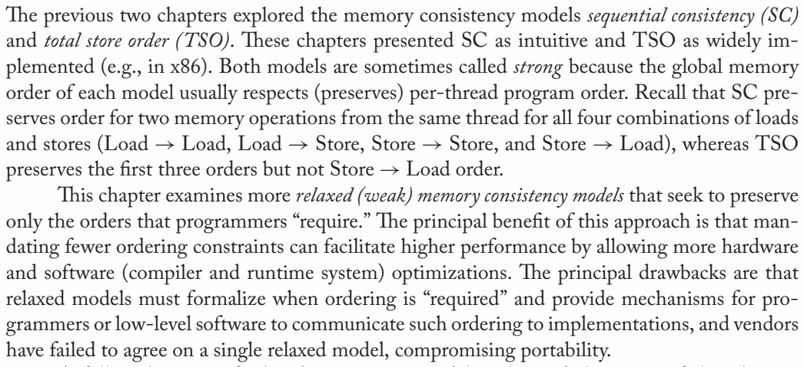
数学符号与上下标以此原版面为准中文前两章讨论了顺序一致性（SC）和全存储顺序（TSO）内存一致性模型。SC直观，TSO则得到广泛实现，例如用于x86。两者有时都称为强模型，因为其全局内存顺序通常遵循各线程的程序顺序。回顾前文，SC保持同一线程中加载与存储四种组合的顺序：加载→加载、加载→存储、存储→存储、存储→加载；TSO保持前三种，但不保持存储→加载顺序。本章研究更宽松的弱内存一致性模型，它们只试图保持程序员“需要”的顺序。主要优点是减少强制顺序约束，从而允许更多硬件和软件（编译器及运行时系统）优化，提升性能。主要缺点是：必须形式化界定何时“需要”顺序，并提供机制，让程序员或底层软件将这些顺序要求传达给实现；此外，厂商未能就统一的宽松模型达成一致，削弱了可移植性。
ENGLISHA full exploration of relaxed consistency models is beyond the scope of this chapter. This chapter is instead a primer that seeks to provide the basic intuition and help make the reader aware of the limits of a simple understanding of these models. In particular, we provide motivation for relaxed models (Section 5.1), present and formalize an example relaxed consistency model XC (Section 5.2), discuss the implementation of XC, including atomic instructions and instructions used to enforce ordering (Section 5.3), introduce sequential consistency for data-race-free programs (Section 5.4), present additional relaxed model concepts (Section 5.5), present the RISC-V and IBM Power memory model case studies (Section 5.6), point to further reading and other commercial models (Section 5.7), compare models (Section 5.8), and touch upon high-level-language memory models (Section 5.9).
中文全面讨论宽松一致性模型超出本章范围。本章旨在建立基本直觉，并帮助读者认识简单理解的局限。具体内容包括：宽松模型的动机（5.1节）；介绍并形式化示例模型XC（5.2节）；讨论XC实现，包括原子指令与顺序约束指令（5.3节）；介绍无数据竞争程序的顺序一致性保证（5.4节）；补充宽松模型概念（5.5节）；RISC-V与IBM Power案例（5.6节）；延伸阅读与其他商业模型（5.7节）；模型比较（5.8节）；以及高级语言内存模型简介（5.9节）。
ENGLISH5.1 MOTIVATION
中文5.1 动机
ENGLISHAs we will soon see, mastering relaxed consistency models can be more challenging than understanding SC and TSO. These drawbacks beg the question: why bother with relaxed models at all? In this section, we motivate relaxed models, first by showing some common situations in which programmers do not care about instruction ordering (Section 5.1.1) and then by discussing a few of the optimizations that can be exploited when unnecessary orderings are not enforced (Section 5.1.2).
中文很快就会看到，掌握宽松一致性模型可能比理解SC和TSO更具挑战。这自然引出一个问题：为什么还要使用宽松模型？本节先说明若干程序员并不关心指令顺序的常见情形（5.1.1节），再讨论不强制执行无用顺序后能够采用的一些优化（5.1.2节）。
查看 原书第 55 页 的完整原版面（PDF 77）
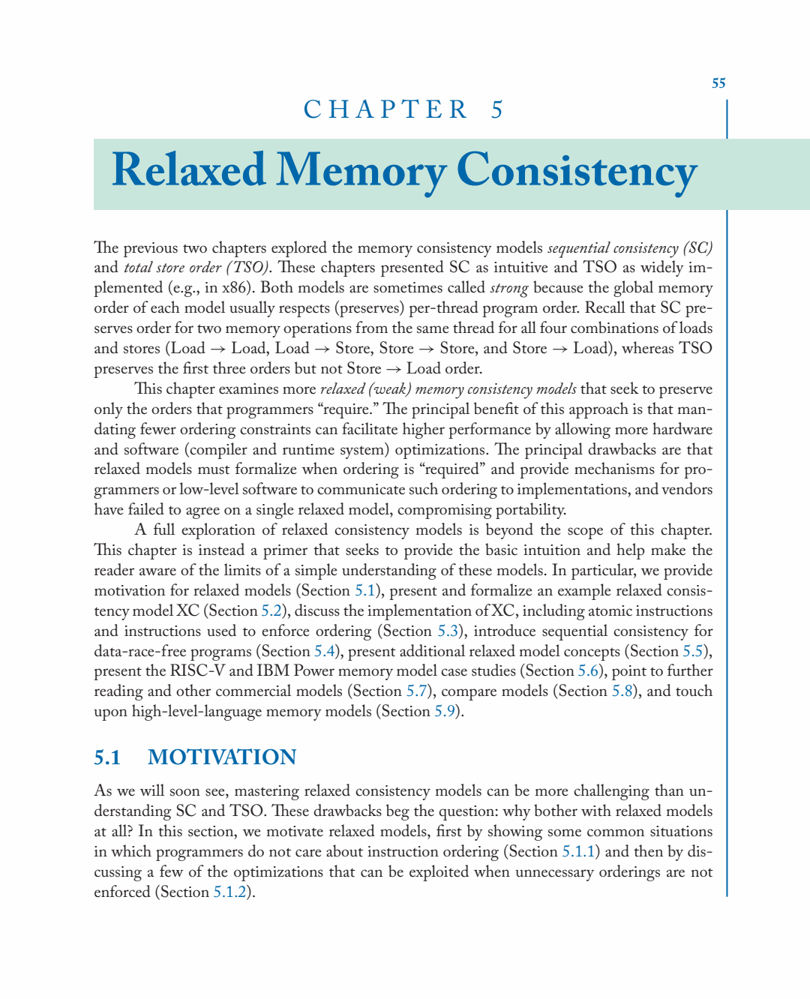
原书第 56 页PDF 78
ENGLISH5.1.1 OPPORTUNITIES TO REORDER MEMORY OPERATIONS Consider the example depicted in Table 5.1. Most programmers would expect that r2 will always get the value NEW because S1 is before S3 and S3 is before the dynamic instance of L1 that loads the value SET, which is before L2. We can denote this:
中文5.1.1 内存操作重排的机会
考虑表5.1。大多数程序员预期r2总得到NEW，因为S1先于S3，S3先于读到SET的那次动态L1，而该L1又先于L2。可表示为：
考虑表5.1。大多数程序员预期r2总得到NEW，因为S1先于S3，S3先于读到SET的那次动态L1，而该L1又先于L2。可表示为：
ENGLISH• S1 S3 L1 loads SET L2. ! ! ! Similarly, most programmers would expect that r3 will always get the value NEW because:

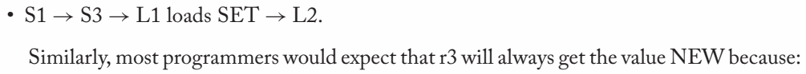
数学符号与上下标以此原版面为准中文• S1 → S3 → 读到SET的L1 → L2。
类似地，大多数程序员预期r3总得到NEW，因为：
类似地，大多数程序员预期r3总得到NEW，因为：
ENGLISH• S2 S3 L1 loads SET L3. ! ! ! In addition to these two expected orders above, SC and TSO also require the orders S1 ! S2 and L2 L3. Preserving these additional orders may limit implementation optimizations to ! aid performance, yet these additional orders are not needed by the program for correct operation.

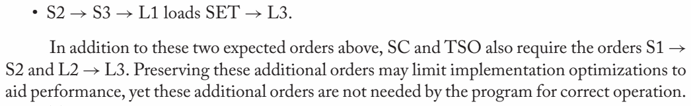
数学符号与上下标以此原版面为准中文• S2 → S3 → 读到SET的L1 → L3。
除这两个预期顺序外，SC和TSO还要求S1 → S2以及L2 → L3。保持这些额外顺序可能限制提升性能的实现优化，但程序正确运行并不需要它们。
除这两个预期顺序外，SC和TSO还要求S1 → S2以及L2 → L3。保持这些额外顺序可能限制提升性能的实现优化，但程序正确运行并不需要它们。
ENGLISHTable 5.2 depicts a more general case of the handoff between two critical sections using
中文表5.2给出更一般的情形：使用同一把锁的两个临界区之间
ENGLISHthe same lock. Assume that hardware supports lock acquire (e.g., with test-and-set doing a readmodify-write and looping until it succeeds) and lock release (e.g., store the value 0). Let core C1 acquire the lock, do critical section 1 with an arbitrary interleaving of loads (L1i) and stores (S1j), and then release the lock. Similarly, let core C2 do critical section 2, including an arbitrary interleaving of loads (L2i) and stores (S2j).
中文进行交接。假定硬件支持获取锁，例如用test-and-set执行读—改—写并循环重试至成功，以及释放锁，例如写入0。让C1获取锁，在临界区1中以任意交错执行加载L1i与存储S1j，然后释放锁。类似地，C2执行临界区2，其中加载L2i与存储S2j也任意交错。
ENGLISHProper operation of the handoff from critical section 1 to critical section 2 depends on the order of these operations:
中文从临界区1正确交接到临界区2，依赖以下操作顺序：
ENGLISH• All L1i, All S1j R1 A2 All L2i, All S2j, ! ! ! where commas (“,”) separate operations whose order is not specified.

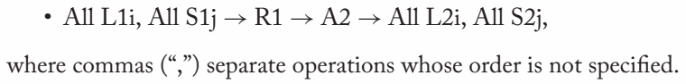
数学符号与上下标以此原版面为准中文• 全部L1i、全部S1j → R1 → A2 → 全部L2i、全部S2j。
逗号分隔的操作之间未规定顺序。
逗号分隔的操作之间未规定顺序。
ENGLISHProper operation does not depend on any ordering of the loads and stores within each critical section—unless the operations are to the same address (in which case ordering is required to maintain sequential processor ordering). That is:
中文正确运行并不依赖每个临界区内部加载与存储之间的顺序，除非操作访问同一地址，此时必须保持顺序处理器语义。也就是说：
ENGLISH• All L1i and S1j can be in any order with respect to each other, and
中文• 所有L1i与S1j彼此之间可以任意排序；
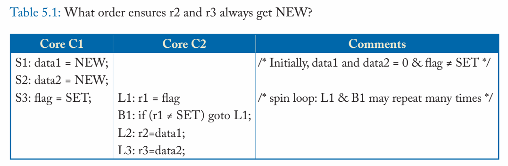
展开可搜索的英文文字
Core C1 Core C2 Comments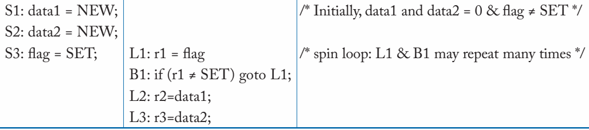
展开可搜索的英文文字
S1: data1 = NEW; /* Initially, data1 and data2 = 0 & fl ag ≠ SET */ S2: data2 = NEW; S3: fl ag = SET; L1: r1 = fl ag /* spin loop: L1 & B1 may repeat many times */ B1: if (r1 ≠ SET) goto L1; L2: r2=data1; L3: r3=data2;查看 原书第 56 页 的完整原版面（PDF 78）
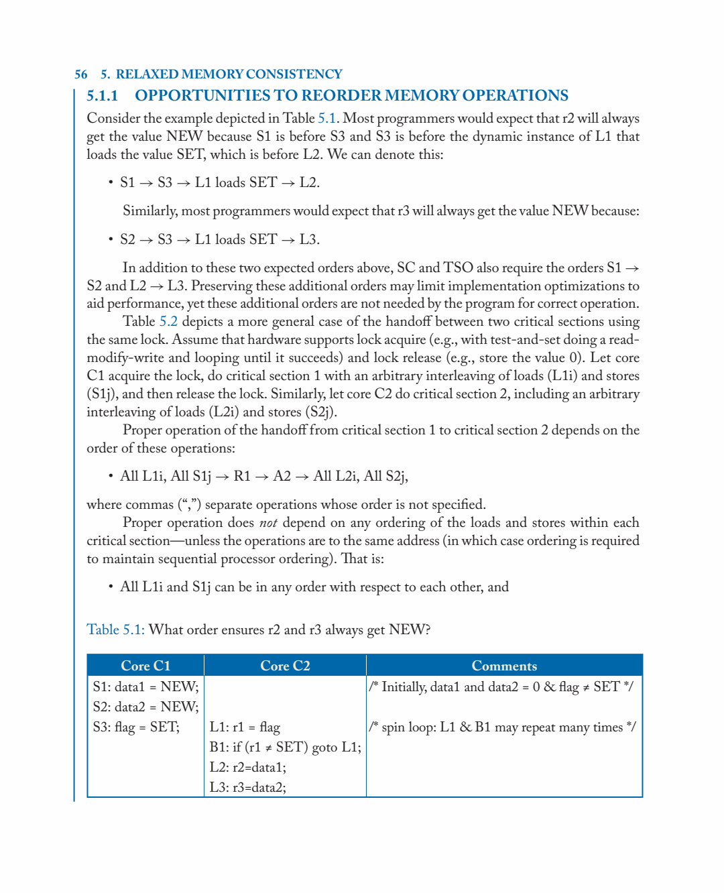
原书第 57 页PDF 79
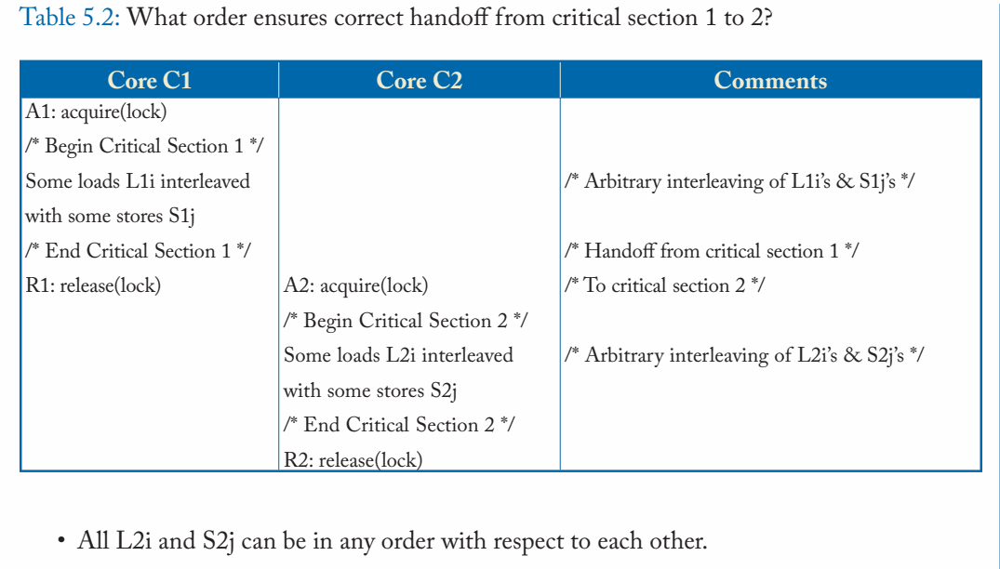
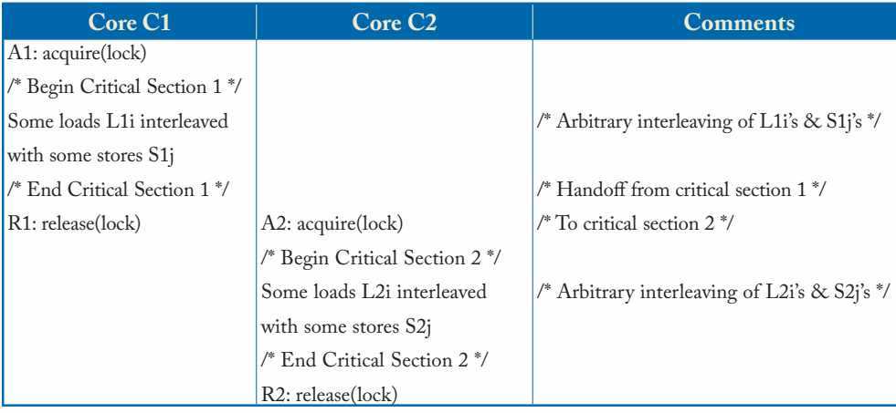
展开可搜索的英文文字
Core C1 Core C2 Comments A1: acquire(lock) /* Begin Critical Section 1 */ Some loads L1i interleaved /* Arbitrary interleaving of L1i’s & S1j’s */ with some stores S1j /* End Critical Section 1 */ /* Handoff from critical section 1 */ R1: release(lock) A2: acquire(lock) /* To critical section 2 */ /* Begin Critical Section 2 */ Some loads L2i interleaved /* Arbitrary interleaving of L2i’s & S2j’s */ with some stores S2j /* End Critical Section 2 */ R2: release(lock)ENGLISH• All L2i and S2j can be in any order with respect to each other.
中文• 所有L2i与S2j彼此之间也可以任意排序。
ENGLISHIf proper operation does not depend on ordering among many loads and stores, perhaps one could obtain higher performance by relaxing the order among them, since loads and stores are typically much more frequent than lock acquires and releases. This is what relaxed or weak models do.
中文若正确运行不依赖许多加载和存储之间的顺序，就可能通过放松这些顺序获得更高性能，因为加载和存储通常远比锁获取与释放频繁。这正是宽松或弱模型的做法。
ENGLISH5.1.2 OPPORTUNITIES TO EXPLOIT REORDERING Assume for now a relaxed memory consistency model that allows us to reorder any memory operations unless there is a FENCE between them. This relaxed model forces the programmer to reason about which operations need to be ordered, which is a drawback, but it also enables many optimizations that can improve performance. We discuss a few common and important optimizations, but a deep treatment of this topic is beyond the scope of this primer.
中文5.1.2 利用重排的机会
暂且假设一种宽松模型：只要两个内存操作之间没有FENCE，就允许重排它们。这迫使程序员推理哪些操作必须排序，这是缺点；但它也允许许多提升性能的优化。下面讨论若干常见且重要的优化，更深入的讨论超出本书范围。
暂且假设一种宽松模型：只要两个内存操作之间没有FENCE，就允许重排它们。这迫使程序员推理哪些操作必须排序，这是缺点；但它也允许许多提升性能的优化。下面讨论若干常见且重要的优化，更深入的讨论超出本书范围。
ENGLISHNon-FIFO, Coalescing Write Buffer Recall that TSO enables the use of a FIFO write buffer, which improves performance by hiding some or all of the latency of committed stores. Although a FIFO write buffer improves performance, an even more optimized design would use a non-FIFO write buffer that permits coalescing of writes (i.e., two stores that are not consecutive in program order can write to the same entry in the write buffer). However, a non-FIFO coalescing write buffer normally violates TSO because TSO requires stores to appear in program order. Our example relaxed model allows stores to coalesce in a non-FIFO write buffer, so long as the stores have not been separated by a FENCE.
中文支持合并的非FIFO写缓冲区
TSO允许FIFO写缓冲区，通过隐藏已提交存储的部分或全部延迟来提升性能。更进一步的设计可使用非FIFO写缓冲区，并支持写合并，即程序顺序中并不相邻的两个存储可以写入同一个缓冲区表项。然而，这通常违反TSO，因为TSO要求存储表现为按程序顺序执行。示例宽松模型则允许未被FENCE隔开的存储在非FIFO写缓冲区中合并。
TSO允许FIFO写缓冲区，通过隐藏已提交存储的部分或全部延迟来提升性能。更进一步的设计可使用非FIFO写缓冲区，并支持写合并，即程序顺序中并不相邻的两个存储可以写入同一个缓冲区表项。然而，这通常违反TSO，因为TSO要求存储表现为按程序顺序执行。示例宽松模型则允许未被FENCE隔开的存储在非FIFO写缓冲区中合并。
查看 原书第 57 页 的完整原版面（PDF 79）
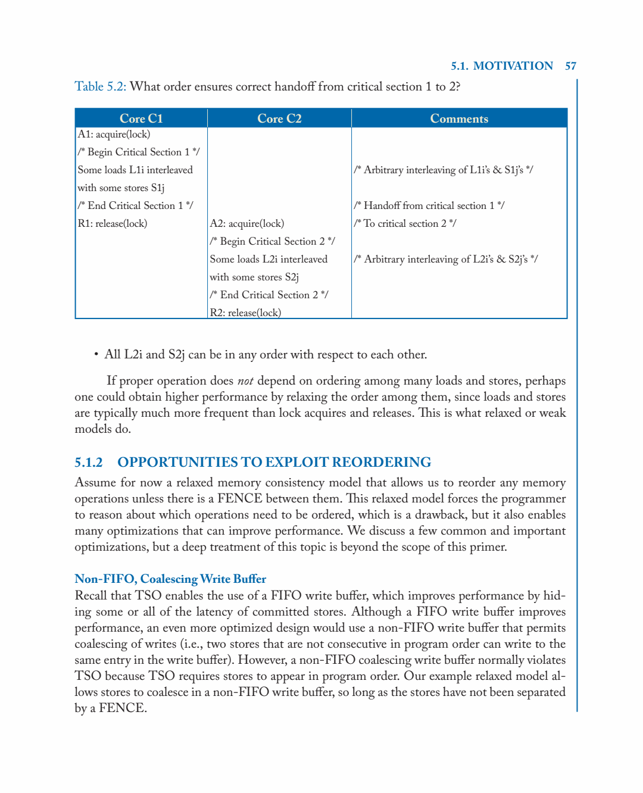
原书第 58 页PDF 80
ENGLISHSimpler Support for Core Speculation In systems with strong consistency models, a core may speculatively execute loads out of program order before they are ready to be committed. Recall how the MIPS R10000 core, which supports SC, used such speculation to gain better performance than a naive implementation that did not speculate. The catch, however, is that speculative cores that support SC typically have to include mechanisms to check whether the speculation is correct, even if mis-speculations are rare [15, 21]. The R10000 checks speculation by comparing the addresses of evicted cache blocks against a list of the addresses that the core has speculatively loaded but not yet committed (i.e., the contents of the core’s load queue). This mechanism adds to the cost and complexity of the hardware, it consumes additional power, and it represents another finite resource that may constrain instruction level parallelism. In a system with a relaxed memory consistency model, a core can execute loads out of program order without having to compare the addresses of these loads to the addresses of incoming coherence requests. These loads are not speculative with respect to the relaxed consistency model (although they may be speculative with respect to, say, a branch prediction or earlier stores by the same thread to the same address).
中文简化处理器核的推测支持
在强一致性模型下，处理器核可在加载准备提交之前，推测性地乱序执行它。支持SC的MIPS R10000正是借此获得高于朴素非推测实现的性能。但支持SC的推测核通常必须包含检查推测是否正确的机制，即使错误推测很少发生[15, 21]。R10000将被逐出缓存块的地址，与核已推测加载但尚未提交的地址列表，即加载队列内容进行比较。这增加硬件成本、复杂性和功耗，而且成为可能限制指令级并行的又一有限资源。在宽松模型中，核可以乱序执行加载，而无须将这些加载地址与到达的缓存一致性请求地址比较。相对于宽松一致性模型，这些加载并非推测执行；不过，相对于分支预测或同一线程中较早的同地址存储，它们仍可能具有推测性。
在强一致性模型下，处理器核可在加载准备提交之前，推测性地乱序执行它。支持SC的MIPS R10000正是借此获得高于朴素非推测实现的性能。但支持SC的推测核通常必须包含检查推测是否正确的机制，即使错误推测很少发生[15, 21]。R10000将被逐出缓存块的地址，与核已推测加载但尚未提交的地址列表，即加载队列内容进行比较。这增加硬件成本、复杂性和功耗，而且成为可能限制指令级并行的又一有限资源。在宽松模型中，核可以乱序执行加载，而无须将这些加载地址与到达的缓存一致性请求地址比较。相对于宽松一致性模型，这些加载并非推测执行；不过，相对于分支预测或同一线程中较早的同地址存储，它们仍可能具有推测性。
ENGLISHCoupling Consistency and Coherence We previously advocated decoupling consistency and coherence to manage intellectual complexity. Alternatively, relaxed models can provide better performance than strong models by “opening the coherence box.” For example, an implementation might allow a subset of cores to load the new value from a store even as the rest of the cores can still load the old value, temporarily breaking coherence’s single-writer–multiple-reader invariant. This situation can occur, for example, when two thread contexts logically share a per-core write buffer or when two cores share an L1 data cache. However, “opening the coherence box” incurs considerable intellectual and verification complexity, bringing to mind the Greek myth about Pandora’s box. As we will discuss in Section 5.6.2, IBM Power permits the above optimizations. We will also explore in Chapter 10 why and how GPUs and heterogeneous processors typically open the coherence box while enforcing consistency. But first we explore relaxed models with the coherence box sealed tightly.
中文耦合内存一致性与缓存一致性
前文建议将二者解耦，以控制理解和设计的复杂性。另一种选择是“打开缓存一致性黑盒”，使宽松模型获得高于强模型的性能。例如，实现可允许部分核读取某次存储的新值，同时其余核仍可读取旧值，暂时打破缓存一致性的单写者多读者不变量。当两个线程上下文在逻辑上共享一个核的写缓冲区，或两个核共享L1数据缓存时，就可能出现这种情况。但打开黑盒会带来显著的概念与验证复杂性，令人联想到希腊神话中的潘多拉魔盒。5.6.2节将讨论IBM Power如何允许上述优化。第10章还将解释GPU和异构处理器为何以及如何在保证内存一致性的同时打开这一黑盒。现在先讨论保持缓存一致性黑盒封闭的宽松模型。
前文建议将二者解耦，以控制理解和设计的复杂性。另一种选择是“打开缓存一致性黑盒”，使宽松模型获得高于强模型的性能。例如，实现可允许部分核读取某次存储的新值，同时其余核仍可读取旧值，暂时打破缓存一致性的单写者多读者不变量。当两个线程上下文在逻辑上共享一个核的写缓冲区，或两个核共享L1数据缓存时，就可能出现这种情况。但打开黑盒会带来显著的概念与验证复杂性，令人联想到希腊神话中的潘多拉魔盒。5.6.2节将讨论IBM Power如何允许上述优化。第10章还将解释GPU和异构处理器为何以及如何在保证内存一致性的同时打开这一黑盒。现在先讨论保持缓存一致性黑盒封闭的宽松模型。
ENGLISH5.2 AN EXAMPLE RELAXED CONSISTENCY MODEL (XC)
中文5.2 示例宽松一致性模型（XC）
ENGLISHFor teaching purposes, this section introduces an eXample relaxed Consistency model (XC) that captures the basic idea and some implementation potential of relaxed memory consistency models. XC assumes that a global memory order exists, as is true for the strong models of SC and TSO, as well as the largely defunct relaxed models for Alpha [33] and SPARC Relaxed Memory Order (RMO) [34].
中文出于教学目的，本节介绍示例宽松一致性模型XC（eXample relaxed Consistency），体现宽松模型的基本思想及部分实现潜力。XC假定存在全局内存顺序，这一点与SC、TSO等强模型，以及如今大体已停用的Alpha[33]与SPARC宽松内存顺序（RMO）[34]模型相同。
查看 原书第 58 页 的完整原版面（PDF 80）
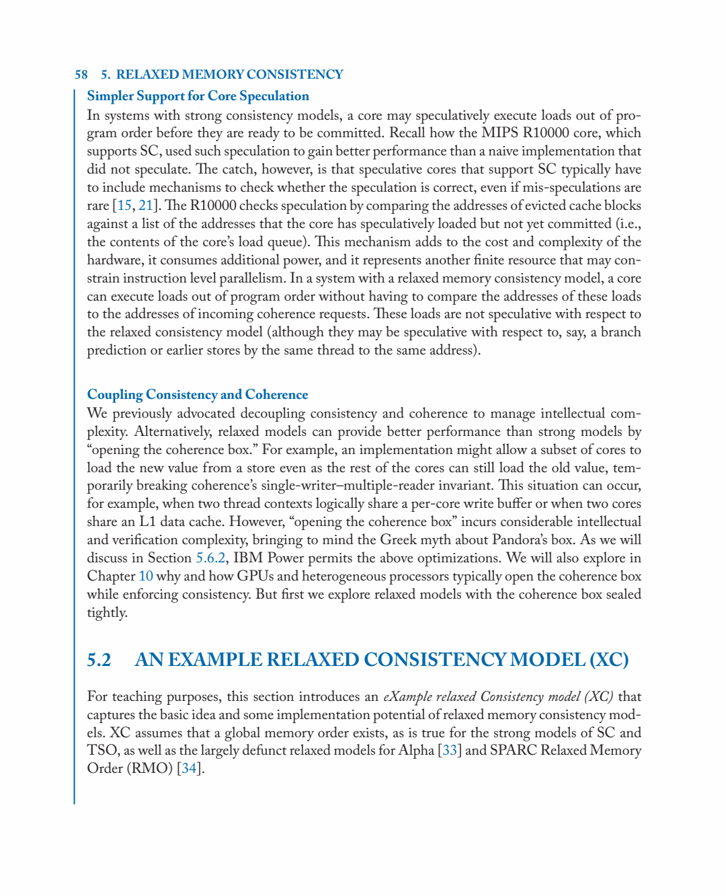
原书第 59 页PDF 81
ENGLISH5.2.1 THE BASIC IDEA OF THE XC MODEL XC provides a FENCE instruction so that programmers can indicate when order is needed; otherwise, by default, loads and stores are unordered. Other relaxed consistency models call a FENCE a barrier, a memory barrier, a membar, or a sync. Let core Ci execute some loads and/or stores, Xi, then a FENCE instruction, and then some more loads and/or stores, Yi. The FENCE ensures that memory order will order all Xi operations before the FENCE, which in turn is before all Yi operations. A FENCE instruction does not specify an address. Two FENCEs by the same core also stay ordered. However, a FENCE does not affect the order of memory operations at other cores (which is why “fence” may be a better name than “barrier”). Some architectures include multiple FENCE instructions with different ordering properties; for example, an architecture could include a FENCE instruction that enforces all orders except from a store to a subsequent load. In this chapter, however, we consider only FENCEs that order all types of operations.
中文5.2.1 XC模型的基本思想
XC提供FENCE指令，供程序员指出需要顺序约束的位置；除此之外，加载与存储默认无序。其他宽松模型也将FENCE称为barrier、memory barrier、membar或sync。设核Ci先执行若干加载和／或存储Xi，再执行FENCE，然后执行另一组操作Yi。FENCE保证内存顺序中全部Xi先于FENCE，而FENCE又先于全部Yi。FENCE不指定地址；同一核的两个FENCE也保持顺序。但一个核的FENCE不影响其他核的内存操作顺序，因此“fence”可能比“barrier”更贴切。有些体系结构提供多种具有不同排序性质的FENCE，例如某种FENCE保证除存储→后续加载之外的全部顺序。本章只考虑对所有类型操作保证顺序的FENCE。
XC提供FENCE指令，供程序员指出需要顺序约束的位置；除此之外，加载与存储默认无序。其他宽松模型也将FENCE称为barrier、memory barrier、membar或sync。设核Ci先执行若干加载和／或存储Xi，再执行FENCE，然后执行另一组操作Yi。FENCE保证内存顺序中全部Xi先于FENCE，而FENCE又先于全部Yi。FENCE不指定地址；同一核的两个FENCE也保持顺序。但一个核的FENCE不影响其他核的内存操作顺序，因此“fence”可能比“barrier”更贴切。有些体系结构提供多种具有不同排序性质的FENCE，例如某种FENCE保证除存储→后续加载之外的全部顺序。本章只考虑对所有类型操作保证顺序的FENCE。
ENGLISHXC’s memory order is guaranteed to respect (preserve) program order for:
中文XC的内存顺序保证以下组合遵循程序顺序：

中文• 加载→FENCE。

中文• 存储→FENCE。

中文• FENCE→FENCE。

中文• FENCE→加载。
ENGLISH• FENCE Store ! XC maintains TSO rules for ordering two accesses to the same address only:

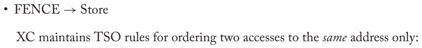
数学符号与上下标以此原版面为准中文• FENCE→存储。
对于访问同一地址的两个操作，XC还保留以下TSO顺序规则：
对于访问同一地址的两个操作，XC还保留以下TSO顺序规则：

中文• 同地址的加载→加载。

中文• 同地址的加载→存储。
ENGLISH• Store Store to the same address ! These rules enforce the sequential processor model (i.e., sequential core semantics) and prohibit behaviors that might astonish programmers. For example, the Store Store rule pre- ! vents a critical section that performs “A = 1” then “A = 2” from completing strangely with A set to 1. Likewise, the Load Load rule ensures that if B was initially 0 and another thread ! performs “B = 1,” then the present thread cannot perform “r1 = B” then “r2 = B” with r1 getting 1 and r2 getting 0, as if B’s value went from new to old.

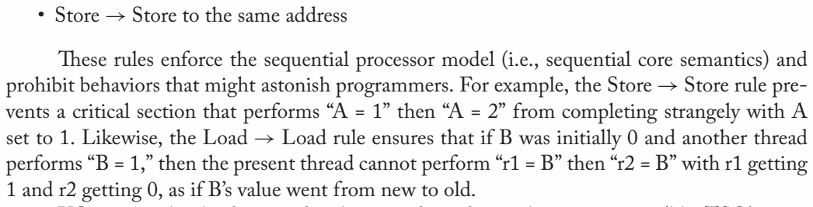
数学符号与上下标以此原版面为准中文• 同地址的存储→存储。
这些规则保证顺序处理器模型，也就是单核顺序语义，并禁止可能令程序员意外的行为。例如，存储→存储规则防止临界区先执行“A = 1”再执行“A = 2”，却最终使A奇怪地等于1。类似地，若B初始为0，另一个线程执行“B = 1”，加载→加载规则可防止当前线程先执行“r1 = B”再执行“r2 = B”，结果r1为1、r2为0，仿佛B从新值倒退回旧值。
这些规则保证顺序处理器模型，也就是单核顺序语义，并禁止可能令程序员意外的行为。例如，存储→存储规则防止临界区先执行“A = 1”再执行“A = 2”，却最终使A奇怪地等于1。类似地，若B初始为0，另一个线程执行“B = 1”，加载→加载规则可防止当前线程先执行“r1 = B”再执行“r2 = B”，结果r1为1、r2为0，仿佛B从新值倒退回旧值。
ENGLISHXC ensures that loads immediately see updates due to their own stores (like TSO’s write buffer bypassing). This rule preserves the sequentiality of single threads, also to avoid programmer astonishment.
中文XC保证加载立即看到自身存储的更新，类似TSO的写缓冲区旁路。这也用于保持单线程顺序性，避免程序员感到意外。
查看 原书第 59 页 的完整原版面（PDF 81）
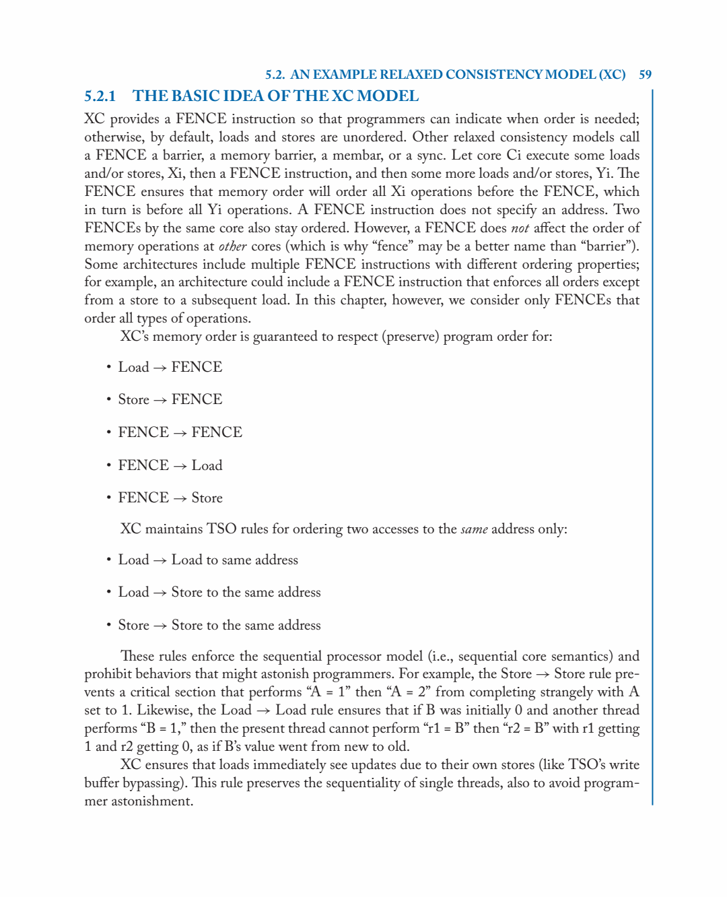
原书第 60 页PDF 82
ENGLISH5.2.2 EXAMPLES USING FENCES UNDER XC
中文5.2.2 XC中使用FENCE的示例
ENGLISHTable 5.3 shows how programmers or low-level software should insert FENCEs in the program
中文表5.3说明，程序员或底层软件应如何在表5.1的程序中插入FENCE，
ENGLISHof Table 5.1 so that it operates correctly under XC. These FENCEs ensure:
中文使其在XC下正确运行。这些FENCE保证：
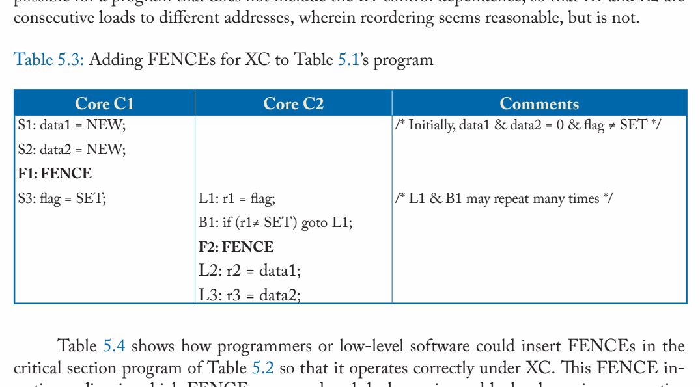
ENGLISH• S1, S2 F1 S3 L1 loads SET F2 L2, L3. ! ! ! ! ! The F1 FENCE, which orders stores, makes sense to most readers, but some are surprised by the need for the F2 FENCE ordering loads. However, if one allows the loads to execute out of order, they can make it look like in-order stores executed out of order. For example, if execution can proceed as L2, S1, S2, S3, L1, and L3, then L2 can obtain the value 0. This result is especially possible for a program that does not include the B1 control dependence, so that L1 and L2 are consecutive loads to different addresses, wherein reordering seems reasonable, but is not.

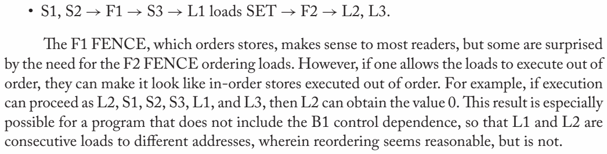
数学符号与上下标以此原版面为准中文• S1、S2 → F1 → S3 → 读到SET的L1 → F2 → L2、L3。
大多数读者容易理解用于排列存储的F1，却可能对加载之间还需要F2感到意外。但允许加载乱序，会使按顺序执行的存储看起来像乱序执行。例如，若执行顺序为L2、S1、S2、S3、L1、L3，L2就可能得到0。若程序省去B1控制依赖，使L1和L2成为针对不同地址的相邻加载，这种结果尤其可能出现；此时重排看似合理，实际却不符合程序需求。
大多数读者容易理解用于排列存储的F1，却可能对加载之间还需要F2感到意外。但允许加载乱序，会使按顺序执行的存储看起来像乱序执行。例如，若执行顺序为L2、S1、S2、S3、L1、L3，L2就可能得到0。若程序省去B1控制依赖，使L1和L2成为针对不同地址的相邻加载，这种结果尤其可能出现；此时重排看似合理，实际却不符合程序需求。
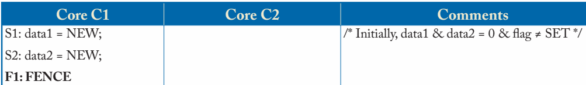
展开可搜索的英文文字
Core C1 Core C2 Comments S1: data1 = NEW; /* Initially, data1 & data2 = 0 & fl ag ≠ SET */ S2: data2 = NEW; F1: FENCE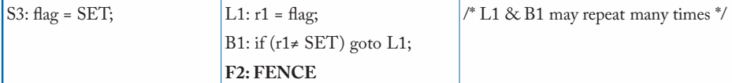
展开可搜索的英文文字
S3: fl ag = SET; L1: r1 = fl ag; /* L1 & B1 may repeat many times */ B1: if (r1≠ SET) goto L1; F2: FENCEENGLISHTable 5.4 shows how programmers or low-level software could insert FENCEs in the
中文表5.4说明，程序员或底层软件可以如何在表5.2的
ENGLISHcritical section program of Table 5.2 so that it operates correctly under XC. This FENCE insertion policy, in which FENCEs surround each lock acquire and lock release, is conservative for illustration purposes; we will later show that some of these FENCEs can be removed. In particular, FENCEs F13 and F22 ensure a correct handoff between critical sections because:
中文临界区程序中插入FENCE，使其在XC下正确运行。为便于说明，这里采取保守策略，在每次锁获取和释放的前后都加入FENCE；后文将说明，其中一些可以删除。特别地，F13和F22确保临界区间正确交接，因为：
ENGLISH• All L1i, All S1j F13 R11 A21 F22 All L2i, All S2j ! ! ! ! ! Next, we formalize XC and then show why the above two examples work.

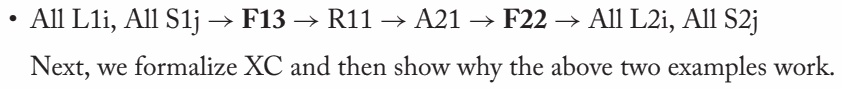
数学符号与上下标以此原版面为准中文• 全部L1i、全部S1j → F13 → R11 → A21 → F22 → 全部L2i、全部S2j。
下面形式化定义XC，再说明上述两个例子为何成立。
下面形式化定义XC，再说明上述两个例子为何成立。
ENGLISH5.2.3 FORMALIZING XC Here, we formalize XC in a manner consistent with the previous two chapters’ notation and approach. Once again, let L(a) and S(a) represent a load and a store, respectively, to address a. Orders <p and <m define per-processor program order and global memory order, respectively.
中文5.2.3 形式化定义XC
这里采用与前两章一致的记号和方法。L(a)和S(a)分别表示对地址a的加载和存储，<p与<m分别表示各处理器的程序顺序和全局内存顺序。
这里采用与前两章一致的记号和方法。L(a)和S(a)分别表示对地址a的加载和存储，<p与<m分别表示各处理器的程序顺序和全局内存顺序。
查看 原书第 60 页 的完整原版面（PDF 82）
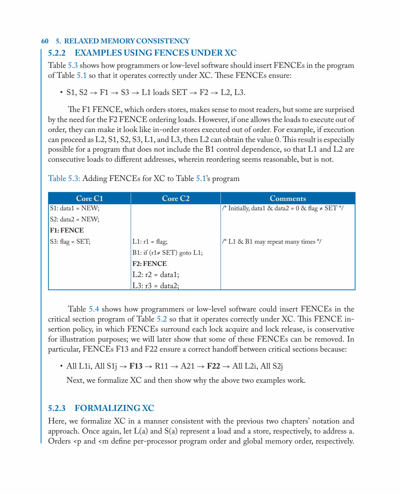
原书第 61 页PDF 83
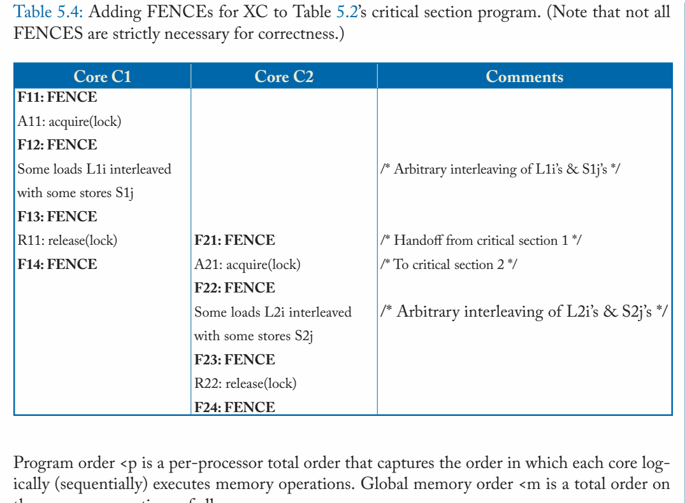
展开可搜索的英文文字
Core C1 Core C2 Comments F11: FENCEENGLISHProgram order <p is a per-processor total order that captures the order in which each core logically (sequentially) executes memory operations. Global memory order <m is a total order on the memory operations of all cores.
中文程序顺序<p是每个处理器内部的全序，描述各核在逻辑上顺序执行内存操作的次序。全局内存顺序<m是所有核内存操作的全序。
ENGLISHMore formally, an XC execution requires the following.
中文更正式地，XC执行要求：
ENGLISH1. All cores insert their loads, stores, and FENCEs into the order <m respecting:
中文1. 各核将加载、存储和FENCE插入<m时，遵循以下规则：

中文• 若L(a) <p FENCE，则L(a) <m FENCE。/* 加载→FENCE */

中文• 若S(a) <p FENCE，则S(a) <m FENCE。/* 存储→FENCE */

中文• 若FENCE₁ <p FENCE₂，则FENCE₁ <m FENCE₂。/* FENCE→FENCE */

中文• 若FENCE <p L(a)，则FENCE <m L(a)。/* FENCE→加载 */

中文• 若FENCE <p S(a)，则FENCE <m S(a)。/* FENCE→存储 */
ENGLISH2. All cores insert their loads and stores to the same address into the order <m respecting:
中文2. 各核将针对同一地址的加载和存储插入<m时，遵循：
ENGLISH• If L(a) <p L’(a) L(a) <m L’ (a) /* Load Load to same address */ ) !

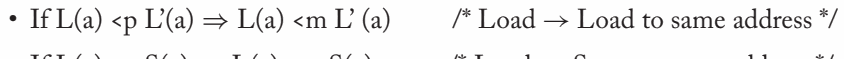
数学符号与上下标以此原版面为准中文• 若L(a) <p L′(a)，则L(a) <m L′(a)。/* 同地址的加载→加载 */
ENGLISH• If L(a) <p S(a) L(a) <m S(a) /* Load Store to same address */ ) !

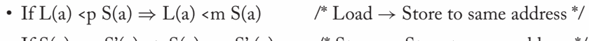
数学符号与上下标以此原版面为准中文• 若L(a) <p S(a)，则L(a) <m S(a)。/* 同地址的加载→存储 */
ENGLISH• If S(a) <p S’(a) S(a) <m S’ (a) /* Store Store to same address */ ) !

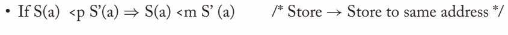
数学符号与上下标以此原版面为准中文• 若S(a) <p S′(a)，则S(a) <m S′(a)。/* 同地址的存储→存储 */
查看 原书第 61 页 的完整原版面（PDF 83）
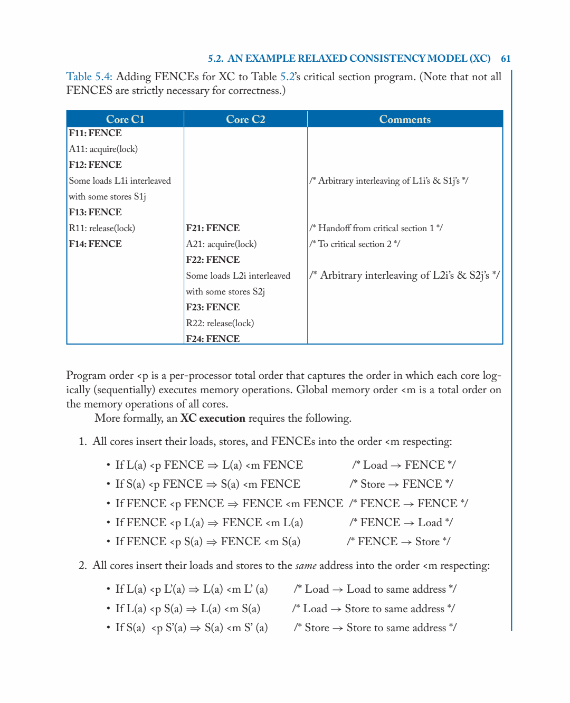
原书第 62 页PDF 84
ENGLISH3. Every load gets its value from the last store before it to the same address:
中文3. 每个加载从此前针对同一地址的最后一次存储取得值：
ENGLISHValue of L(a) = Value of MAX {S(a) | S(a) <m L(a) or S(a) <p L(a)} /* Like TSO */ <m
中文Value of L(a) = Value of MAX_<m {S(a) | S(a) <m L(a) 或 S(a) <p L(a)}。/* 与TSO相同 */
ENGLISHWe summarize these ordering rules in Table 5.5. This table differs considerably from the analogous tables for SC and TSO. Visually, the table shows that ordering is enforced only for operations to the same address or if FENCEs are used. Like TSO, if operation 1 is “store C” and operation 2 is “load C,” the store can enter the global order after the load, but the load must already see the newly stored value.
中文表5.5汇总这些顺序规则，与SC、TSO对应表格差异很大。直观可见，只有访问相同地址，或使用FENCE时，才强制保持顺序。与TSO相同，若操作1是“store C”、操作2是“load C”，存储可以在加载之后进入全局顺序，但加载必须已经看到该存储的新值。
ENGLISHAn implementation that allows only XC executions is an XC implementation.
中文只允许XC执行的实现，就是XC实现。
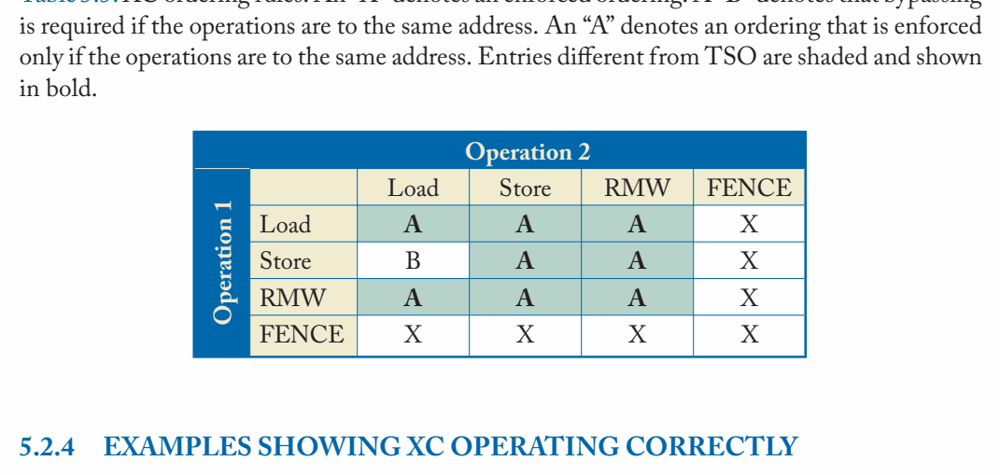
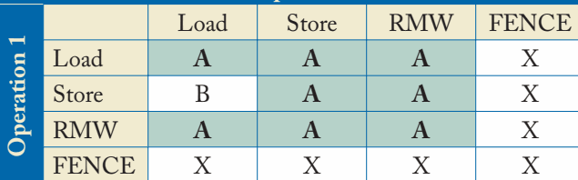
展开可搜索的英文文字
1 noitarepO Load Store RMW FENCE Load A A A X Store B A A X RMW A A A X FENCE X X X XENGLISH5.2.4 EXAMPLES SHOWING XC OPERATING CORRECTLY With the formalisms of the last section, we can now reveal why Section 5.2.2’s two examples work correctly. Figure 5.1a shows an XC execution of the example from Table 5.3 in which core C1’s stores S1 and S2 are reordered, as are core C2’s loads L2 and L3. Neither reordering, however, affects the results of the program. Thus, as far as the programmer can tell, this XC execution is equivalent to the SC execution depicted in Figure 5.1b, in which the two pairs of operations are not reordered.
中文5.2.4 XC正确运行的示例
有了上一节的形式化定义，现在可以解释5.2.2节两个例子为何正确。图5.1a展示表5.3程序的一次XC执行，其中C1的S1与S2重排，C2的L2与L3也重排。但两种重排都不影响程序结果。因此，从程序员可观察的效果看，该XC执行等价于图5.1b的SC执行，后者没有重排这两对操作。
有了上一节的形式化定义，现在可以解释5.2.2节两个例子为何正确。图5.1a展示表5.3程序的一次XC执行，其中C1的S1与S2重排，C2的L2与L3也重排。但两种重排都不影响程序结果。因此，从程序员可观察的效果看，该XC执行等价于图5.1b的SC执行，后者没有重排这两对操作。
ENGLISHSimilarly, Figure 5.2a depicts an execution of the critical section example from Table 5.4 in which core C1’s loads L1i and stores S1j are reordered with respect to each other, as are core C2’s L2i and stores S2j. Once again, these reorderings do not affect the results of the program. Thus, as far as the programmer can tell, this XC execution is equivalent to the SC execution depicted in Figure 5.2b, in which no loads or stores are reordered.
中文类似地，图5.2a给出表5.4临界区程序的一次执行，其中C1的L1i与S1j相互重排，C2的L2i与S2j也相互重排。这些重排仍不影响程序结果。因此，从程序员角度看，它等价于图5.2b中没有重排任何加载和存储的SC执行。
ENGLISHThese examples demonstrate that, with sufficient FENCEs, a relaxed model like XC can appear to programmers as SC. Section 5.4 discusses generalizing from these examples, but first let us implement XC.
中文这些例子说明，加入足够FENCE后，XC之类宽松模型在程序员看来可以表现为SC。5.4节将推广这一结论，下面先讨论XC实现。
查看 原书第 62 页 的完整原版面（PDF 84）
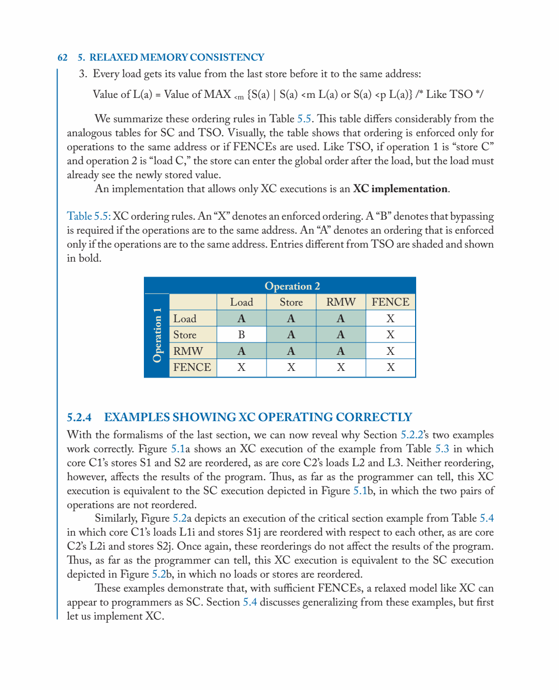
原书第 63 页PDF 85
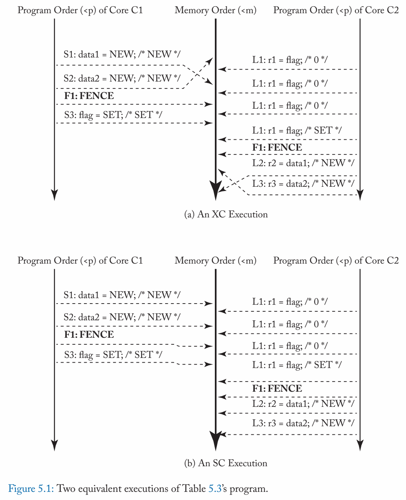
查看 原书第 63 页 的完整原版面（PDF 85）
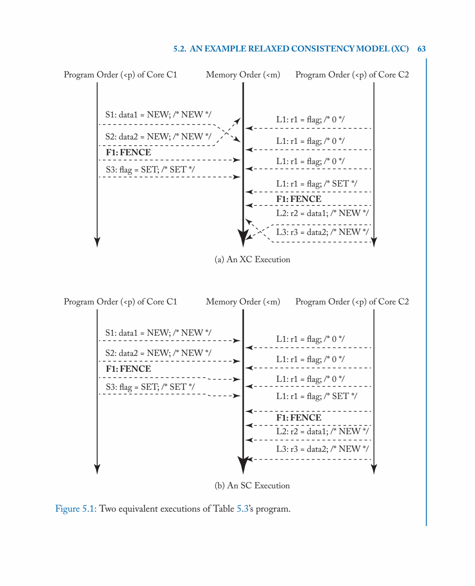
原书第 64 页PDF 86
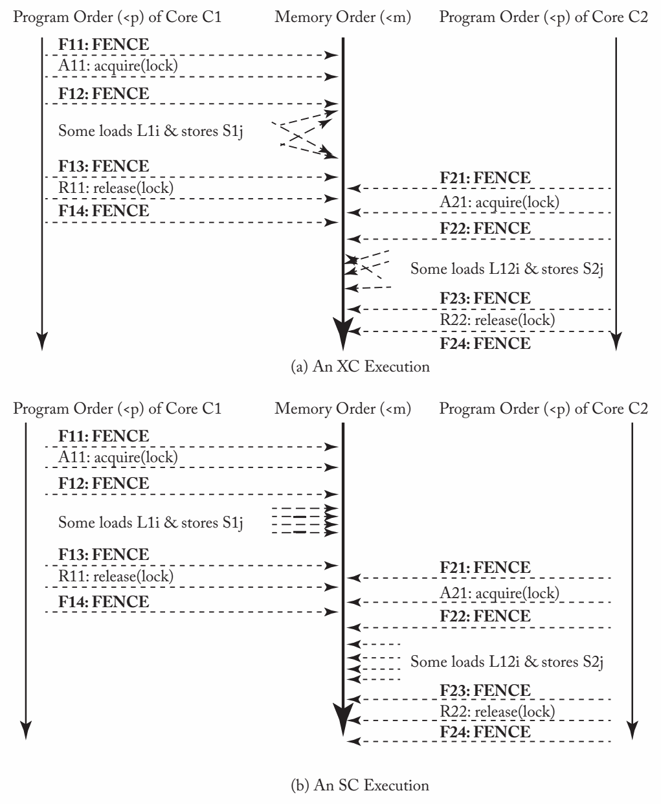
查看 原书第 64 页 的完整原版面（PDF 86）
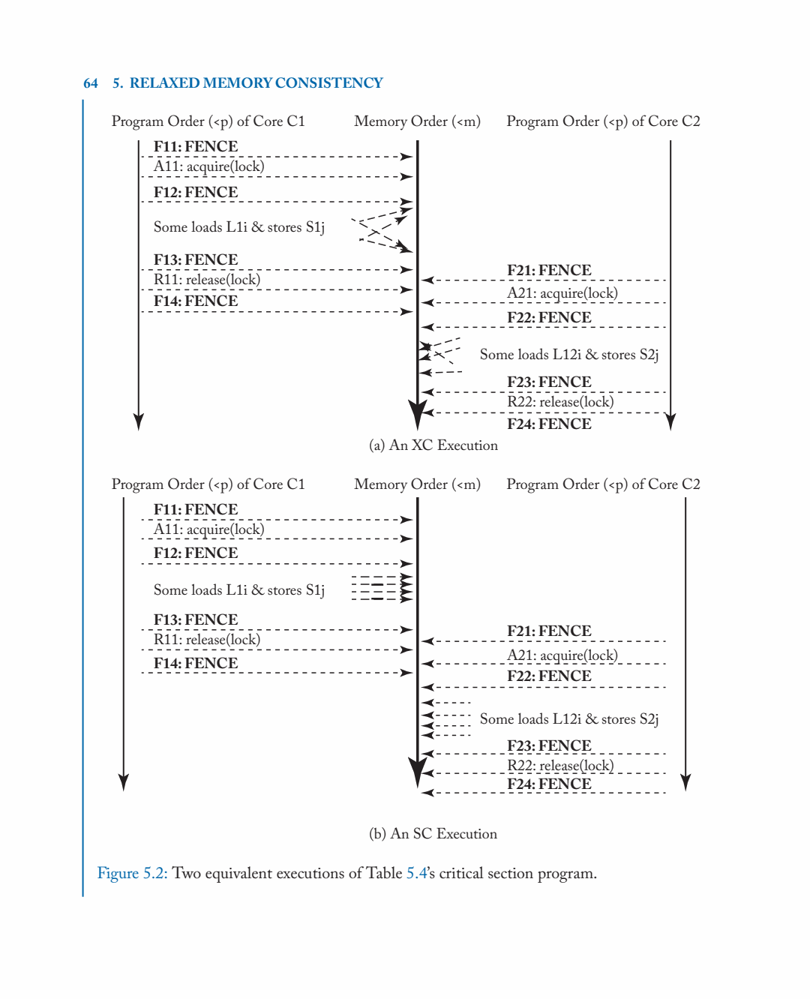
原书第 65 页PDF 87
ENGLISH5.3 IMPLEMENTING XC
中文5.3 实现XC
ENGLISHThis section discusses implementing XC. We follow an approach similar to that used for implementing SC and TSO in the previous two chapters, in which we separate the reordering of core operations from cache coherence. Recall that each core in a TSO system was separated from shared memory by a FIFO write buffer. For XC, each core will be separated from memory by a more general reorder unit that can reorder both loads and stores.
中文本节采用与前两章实现SC和TSO相似的方法，将处理器核操作的重排与缓存一致性分开。回顾TSO，每个核与共享内存之间隔着FIFO写缓冲区。对于XC，这一位置改为更通用的重排单元，能够同时重排加载与存储。
ENGLISHAs depicted by Figure 5.3a, XC operates as follows.
中文如图5.3a所示，XC按以下方式工作。
ENGLISH• Loads, stores, and FENCEs leave each core Ci in Ci’s program order <p and enter the tail of Ci’s reorder unit.
中文• 加载、存储和FENCE按核Ci的程序顺序<p离开该核，进入其重排单元尾部。
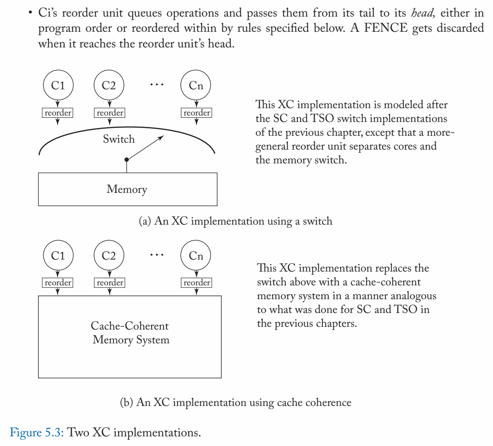
ENGLISH• Ci’s reorder unit queues operations and passes them from its tail to its head, either in program order or reordered within by rules specified below. A FENCE gets discarded when it reaches the reorder unit’s head.
中文• Ci的重排单元将操作排队，使其从尾部移向头部；操作可以保持程序顺序，也可以依据下面规则重排。FENCE到达重排单元头部后被丢弃。
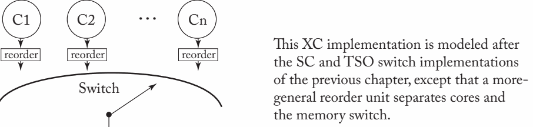
展开可搜索的英文文字
… C1 C2 Cn This XC implementation is modeled after reorder reorder reorder the SC and TSO switch implementations of the previous chapter, except that a more- Switch general reorder unit separates cores and the memory switch.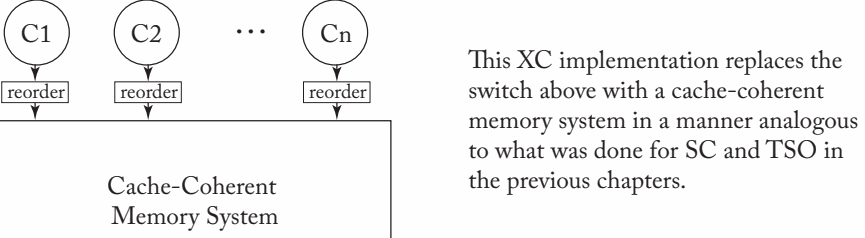
展开可搜索的英文文字
… C1 C2 Cn This XC implementation replaces the reorder reorder reorder switch above with a cache-coherent memory system in a manner analogous to what was done for SC and TSO in Cache-Coherent the previous chapters. Memory System查看 原书第 65 页 的完整原版面（PDF 87）
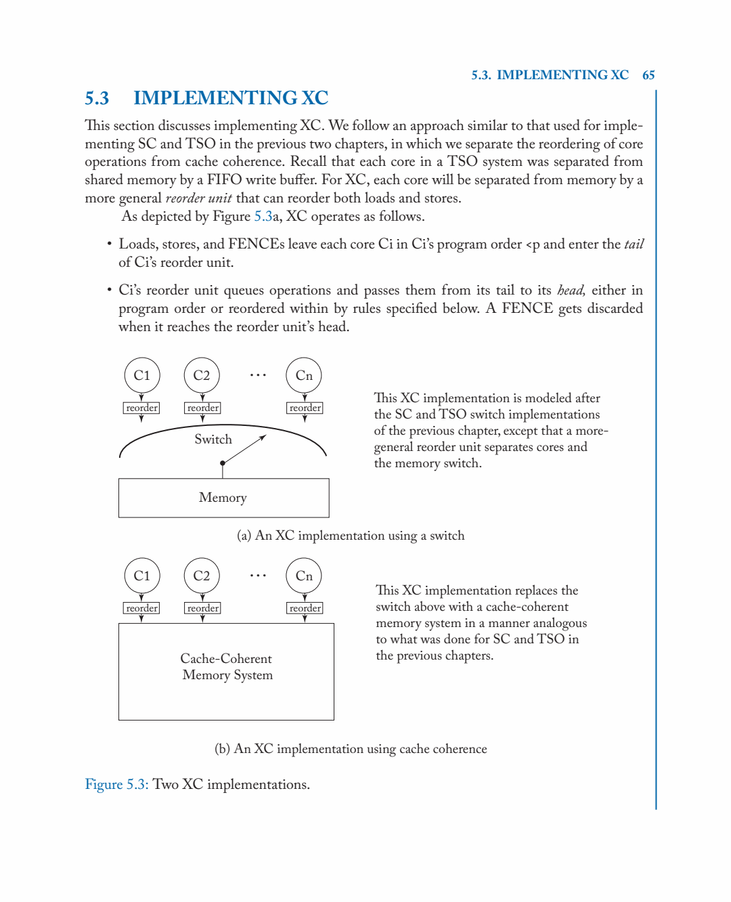
原书第 66 页PDF 88
ENGLISH• When the switch selects core Ci, it performs the load or store at the head of Ci’s reorder unit.
中文• 交换开关选中核Ci时，执行其重排单元头部的加载或存储。
ENGLISHThe reorder units obey rules for (1) FENCEs, (2) operations to the same address, and (3) bypassing.
中文重排单元遵循三类规则：（1）FENCE；（2）同地址操作；（3）旁路转发。
ENGLISH1. FENCEs can be implemented in several different ways (see Section 5.3.2), but they must enforce order. Specifically, regardless of address, the reorder unit may not reorder: Load FENCE, Store FENCE, FENCE FENCE, FENCE Load, or ! ! ! ! FENCE Store !

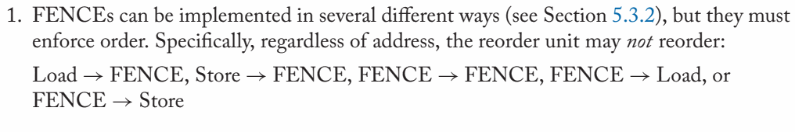
数学符号与上下标以此原版面为准中文1. FENCE可采用多种实现方式，见5.3.2节，但必须保证顺序。具体而言，无论访问何种地址，重排单元都不能重排：加载→FENCE、存储→FENCE、FENCE→FENCE、FENCE→加载以及FENCE→存储。
ENGLISH2. For the same address, the reorder unit may not reorder:
中文2. 对于相同地址，重排单元不能重排：

中文加载→加载、加载→存储、存储→存储。
ENGLISH3. The reorder unit must ensure that loads immediately see updates due to their own stores.
中文3. 重排单元必须确保，加载立即看到自身存储所作的更新。
ENGLISHNot surprisingly, all of these rules mirror those of Section 5.2.3. In the previous two chapters, we argued that the switch and memory in SC and TSO implementations could be replaced by a cache-coherent memory system. The same argument holds for XC, as illustrated by Figure 5.3b. Thus, as for SC and TSO, an XC implementation can separate core (re)ordering rules from the implementation of cache coherence. As before, cache coherence implements the global memory order. What is new is that memory order can more often disrespect program order due to reorder unit reorderings.
中文这些规则自然与5.2.3节相对应。前两章说明，SC和TSO实现中的交换开关与内存，可以替换为支持缓存一致性的内存系统。同样的论证也适用于XC，如图5.3b所示。因此，XC实现也可将核的排序／重排规则与缓存一致性实现分离。缓存一致性仍负责实现全局内存顺序；不同之处在于，由于重排单元的作用，内存顺序可以更频繁地不遵循程序顺序。
ENGLISHSo how much performance does moving from TSO to a relaxed model like XC afford? Unfortunately, the correct answer depends on the factors discussed in Section 5.1.2, such as FIFO vs. coalescing write buffers and speculation support.
中文那么，从TSO转向XC之类宽松模型，究竟能带来多少性能收益？遗憾的是，答案取决于5.1.2节讨论的因素，例如FIFO与可合并写缓冲区的差异，以及推测支持。
ENGLISHIn the late 1990s, one of us saw the trend toward speculative cores as diminishing the raison d’être for relaxed models (better performance) and argued for a return to the simpler interfaces of SC or TSO [22]. Although we still believe that simple interfaces are good, the move did not happen. One reason is corporate momentum. Another reason is that not all future cores will be highly speculative due to power-limited deployments in embedded chips and/or chips with many (asymmetric) cores.
中文20世纪90年代末，本书一位作者认为，推测执行核的发展正在削弱宽松模型赖以存在的理由，即更高性能，因此主张回归SC或TSO的简单接口[22]。尽管我们仍认为简单接口有价值，这种转变并未发生。原因之一是企业既有路线的惯性；另一个原因是，受嵌入式芯片以及包含大量非对称核的芯片中功耗约束影响，并非所有未来处理器核都会采用高度推测执行。
ENGLISH5.3.1 ATOMIC INSTRUCTIONS WITH XC There are several viable ways of implementing an atomic RMW instruction in a system that supports XC. The implementation of RMWs also depends on how the system implements XC; in this section, we assume that the XC system consists of dynamically scheduled cores, each of which is connected to the memory system by a non-FIFO coalescing write buffer.
中文5.3.1 XC中的原子指令
XC系统中有多种可行的原子RMW实现，具体方式也取决于XC本身如何实现。本节假定系统由动态调度核构成，每个核通过可合并的非FIFO写缓冲区连接内存系统。
XC系统中有多种可行的原子RMW实现，具体方式也取决于XC本身如何实现。本节假定系统由动态调度核构成，每个核通过可合并的非FIFO写缓冲区连接内存系统。
ENGLISHIn this XC system model, a simple and viable solution would be to borrow the implementation we used for TSO. Before executing an atomic instruction, the core drains the write buffer, obtains the block with read-write coherence permissions, and then performs the load part
中文在这一系统模型中，简单可行的方案是沿用TSO实现：执行原子指令前，核先排空写缓冲区，取得目标块的读写缓存一致性权限，然后执行加载部分
查看 原书第 66 页 的完整原版面（PDF 88）
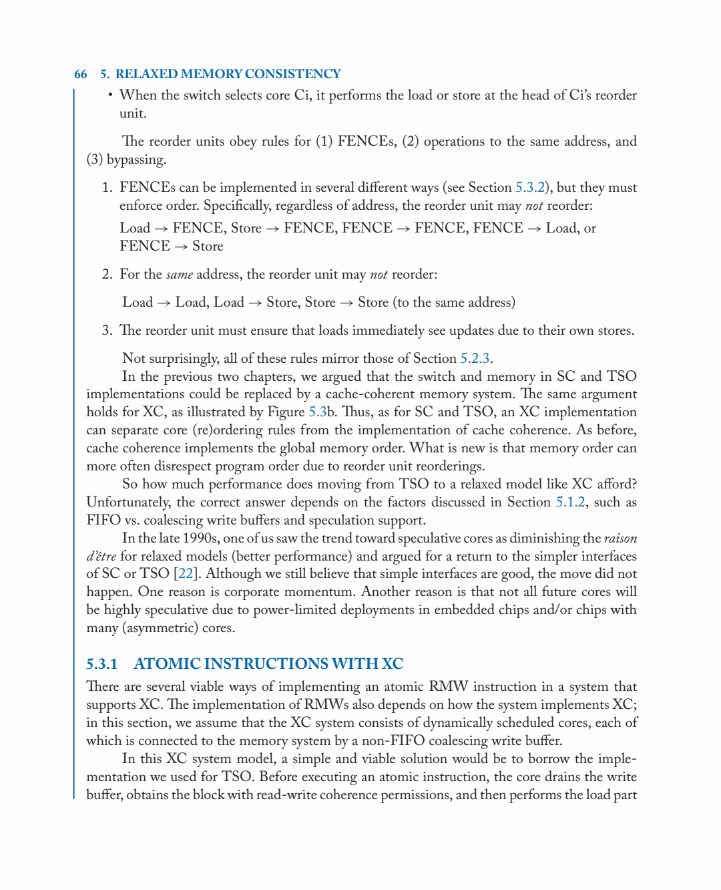
原书第 67 页PDF 89
ENGLISHand the store part. Because the block is in a read-write state, the store part performs directly to the cache, bypassing the write buffer. Between when the load part performs and the store part performs, if such a window exists, the cache controller must not evict the block; if an incoming coherence request arrives, it must be deferred until the store part of the RMW performs.
中文与存储部分。由于块已处于读写状态，存储部分直接写入缓存，绕过写缓冲区。如果加载与存储之间存在时间窗口，缓存控制器不得在此期间逐出该块；若有缓存一致性请求到达，必须推迟到RMW存储部分执行之后。
ENGLISHBorrowing the TSO solution for implementing RMWs is simple, but it is overly conservative and sacrifices some performance. Notably, draining the write buffer is not required because XC allows both the load part and the store part of the RMW to pass earlier stores. Thus, it is sufficient to simply obtain read-write coherence permissions to the block and then perform the load part and the store part without relinquishing the block between those two operations.
中文沿用TSO方案虽简单，却过于保守，会损失部分性能。尤其是，XC允许RMW的加载与存储部分都越过较早存储，所以无须排空写缓冲区。只需取得该块的读写权限，再完成加载与存储，并在两者之间不放弃该块即可。
ENGLISHOther implementations of atomic RMWs are possible, but they are beyond the scope of this primer. One important difference between XC and TSO is how atomic RMWs are used to achieve synchronization. In Table 5.6, we depict a typical critical section, including lock acquire and lock release, for both TSO and XC. With TSO, the atomic RMW is used to attempt to acquire the lock, and a store is used to release the lock. With XC, the situation is more complicated. For the acquire, XC does not, by default, constrain the RMW from being reordered with respect to the operations in the critical section. To avoid this situation, a lock acquire must be followed by a FENCE. Similarly, the lock release is not, by default, constrained from being reordered with respect to the operations before it in the critical section. To avoid this situation, a lock release must be preceded by a FENCE.
中文原子RMW还存在其他实现，超出本书范围。XC与TSO的一个重要差异，是如何用原子RMW实现同步。表5.6分别给出TSO与XC的典型临界区，包括锁获取和释放。TSO用原子RMW尝试获取锁，用存储释放锁。XC则更复杂：默认情况下，获取锁的RMW可以与临界区操作重排，因此锁获取之后必须有FENCE；同样，释放锁默认可与临界区中之前的操作重排，因此锁释放之前必须有FENCE。
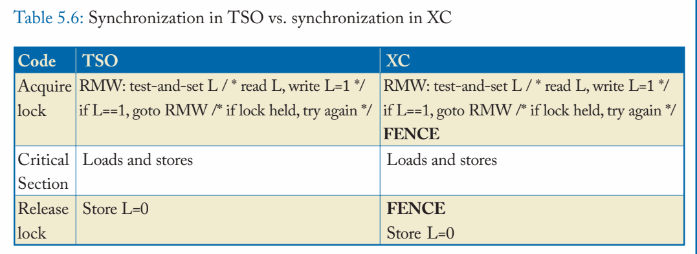
展开可搜索的英文文字
Code TSO XC展开可搜索的英文文字
Acquire RMW: test-and-set L / * read L, write L=1 */ RMW: test-and-set L / * read L, write L=1 */ lock if L==1, goto RMW /* if lock held, try again */ if L==1, goto RMW /* if lock held, try again */ FENCE展开可搜索的英文文字
Critical Loads and stores Loads and stores Section Release Store L=0 FENCE lock Store L=0ENGLISH5.3.2 FENCES WITH XC If a core C1 executes some memory operations Xi, then a FENCE, and then memory operations Yi, the XC implementation must preserve order. Specifically, the XC implementation must order Xi <m FENCE <m Yi. We see three basic approaches:
中文5.3.2 XC中的FENCE
若核C1先执行内存操作Xi，再执行FENCE，然后执行Yi，则XC实现必须保证Xi <m FENCE <m Yi。有三种基本方法：
若核C1先执行内存操作Xi，再执行FENCE，然后执行Yi，则XC实现必须保证Xi <m FENCE <m Yi。有三种基本方法：
查看 原书第 67 页 的完整原版面（PDF 89）
原书第 68 页PDF 90
ENGLISH• An implementation can implement SC and treat all FENCEs as no-ops. This is not done (yet) in a commercial product, but there have been academic proposals, e.g., via implicit transactional memory [16].
中文• 实现SC，并将全部FENCE视为空操作。商业产品当时尚未采用这一方式，但已有学术方案，例如利用隐式事务内存[16]。
ENGLISH• An implementation can wait for all memory operations Xi to perform, consider the FENCE done, and then begin memory operations Yi. This “FENCE as drain” method is common, but it makes FENCEs costly.
中文• 等待全部Xi完成，然后认为FENCE完成，再开始Yi。这种“将FENCE实现为排空”的方法很常见，但FENCE代价较高。
ENGLISH• An implementation can aggressively push toward what is necessary, enforcing Xi <m FENCE <m Yi, without draining. Exactly how one would do this is beyond the scope of this primer. While this approach may be more complex to design and verify, it can lead to better performance than draining.
中文• 更积极地只落实必要条件，在不排空的情况下保证Xi <m FENCE <m Yi。具体实现超出本书范围。该方式设计和验证可能更复杂，但性能可优于排空方案。
ENGLISHIn all cases, a FENCE implementation must know when each operation Xi is done (or at least ordered). Knowing when an operation is done can be especially tricky for a store that bypasses the usual cache coherence (e.g., a store to an I/O device or one using some fancy write update optimization).
中文无论哪种方式，FENCE实现都必须知道每个Xi何时完成，或至少何时完成排序。如果存储绕过常规缓存一致性机制，例如写入I/O设备，或采用特殊写更新优化，判断它何时完成尤其困难。
ENGLISH5.3.3 A CAVEAT Finally, an XC implementor might say, “I’m implementing a relaxed model, so anything goes.” This is not true. One must obey the many XC rules, e.g., Load Load order to the same address ! (this particular ordering is actually non-trivial to enforce in an out-of-order core). Moreover, all XC implementations must be strong enough to provide SC for programs that have FENCEs between each pair of instructions because these FENCEs require memory order to respect all of the program order.数学符号与上下标以此原版面为准

中文5.3.3 注意事项
XC实现者可能会说：“既然是宽松模型，怎么做都可以。”这并不正确。实现仍须遵守许多XC规则，例如同地址的加载→加载顺序；在乱序核中，保证这一顺序实际上并不容易。此外，如果程序在每对指令之间都包含FENCE，那么任何XC实现都必须足够强，能够提供SC，因为这些FENCE要求内存顺序遵循全部程序顺序。
XC实现者可能会说：“既然是宽松模型，怎么做都可以。”这并不正确。实现仍须遵守许多XC规则，例如同地址的加载→加载顺序；在乱序核中，保证这一顺序实际上并不容易。此外，如果程序在每对指令之间都包含FENCE，那么任何XC实现都必须足够强，能够提供SC，因为这些FENCE要求内存顺序遵循全部程序顺序。
ENGLISH5.4 SEQUENTIAL CONSISTENCY FOR DATA-RACE-FREE PROGRAMS
中文5.4 无数据竞争程序的顺序一致性
ENGLISHChildren and computer architects would like “to have their cake and eat it too.” For memory consistency models, this can mean enabling programmers to reason with the (relatively) intuitive model of SC while still achieving the performance benefits of executing on a relaxed model like XC.
中文孩子与计算机体系结构设计者都希望“鱼与熊掌兼得”。对内存一致性模型而言，这意味着让程序员用相对直观的SC进行推理，同时获得在XC之类宽松模型上执行的性能优势。
ENGLISHFortunately, simultaneously achieving both goals is possible for the important class of data-race-free (DRF) programs [3]. Informally, a data race occurs when two threads access the same memory location, at least one of the accesses is a write, and there are no intervening synchronization operations. Data races are often, but not always, the result of programming errors and many programmers seek to write DRF programs. SC for DRF programming asks programmers to ensure programs are DRF under SC by writing correctly synchronized programs and labeling the synchronization operations; it then asks implementors to ensure that all executions
中文幸运的是，对一类重要程序，即无数据竞争（DRF）程序[3]，这两个目标可以同时实现。非形式化地说，如果两个线程访问同一内存位置，其中至少一次是写入，且两次访问之间没有同步操作，就存在数据竞争。数据竞争往往源于编程错误，但并非总是如此，许多程序员希望编写DRF程序。“DRF程序具有SC语义”要求程序员通过正确同步并标注同步操作，确保程序在SC下无数据竞争；同时要求实现者将标注的同步操作映射为宽松模型支持的FENCE与RMW，以确保
查看 原书第 68 页 的完整原版面（PDF 90）
原书第 69 页PDF 91
ENGLISHof DRF programs on the relaxed model are also SC executions by mapping the labeled synchronization operations to FENCEs and RMWs supported by the relaxed memory model. XC and most commercial relaxed memory models have the necessary FENCE instructions and RMWs to recover SC. Moreover, this approach also serves as a foundation for Java and C high-level CC language (HLL) memory models (Section 5.9).数学符号与上下标以此原版面为准

中文DRF程序在宽松模型上的全部执行也都是SC执行。XC及多数商业宽松模型都具有恢复SC所需的FENCE和RMW。此外，该方法也是Java与C++高级语言（HLL）内存模型的基础，见5.9节。
展开可搜索的英文文字
Core C1 Core C2 Comments F11: FENCE /* Initially, data1 & data2 = 0 */ A11: acquire(lock) F12: FENCE S1: data1 = NEW; L1: r2 = data2; S2: data2 = NEW; L2: r1 = data1; /* Four Possible Outcomes under XC: F13: FENCE (r1, r2) = R11: release(lock) (0, 0), (0, NEW), (NEW, 0), or (NEW, NEW) F14: FENCE But has a Data Race */展开可搜索的英文文字
Core C1 Core C2 Comments F11: FENCE /* Initially, data1 & data2 = 0 */ A11: acquire(lock) F12: FENCE查看 原书第 69 页 的完整原版面（PDF 91）
原书第 70 页PDF 92
ENGLISHLet us motivate “SC for DRF” with two examples. Both Table 5.7 and Table 5.8 depict examples in which Core C1 stores two locations (S1 and S2) and Core C2 loads the two locations in the opposite order (L1 and L2). The examples differ because Core C2 does no synchronization in Table 5.7 but acquires the same lock as Core C1 in Table 5.8.
中文用两个例子说明“DRF程序具有SC语义”。表5.7与表5.8中，C1都写入两个位置（S1、S2），C2则按相反顺序读取（L1、L2）。区别在于，表5.7中的C2不做同步，而表5.8中的C2会获取与C1相同的锁。
ENGLISHSince Core C2 does no synchronization in Table 5.7, its loads can execute concurrently with Core C1’s stores. Since XC allows Core C1 to reorder stores S1 and S2 (or not) and Core C2 to reorder loads L1 and L2 (or not), four outcomes are possible wherein (r1, r2) = (0, 0), (0, NEW), (NEW, 0), or (NEW, NEW). Output (0, NEW) occurs, for example, if loads and stores execute in the sequence S2, L1, L2, and then S1 or the sequence L2, S1, S2, and then L1. However, this example includes two data races (S1 with L2 and S2 with L1) because Core C2 does not acquire the lock used by Core C1.
中文由于表5.7中的C2不同步，其加载可与C1的存储并发。XC允许C1重排或不重排S1与S2，也允许C2重排或不重排L1与L2，因此存在四种结果：(r1, r2) = (0, 0)、(0, NEW)、(NEW, 0)、(NEW, NEW)。例如，顺序S2、L1、L2、S1，或L2、S1、S2、L1，都可产生(0, NEW)。但该例有两处数据竞争：S1与L2、S2与L1，因为C2没有获取C1使用的锁。
ENGLISHTable 5.8 depicts the case in which Core C2 acquires the same lock as acquired by Core
中文表5.8中，C2获取与C1相同的
ENGLISHC1. In this case, Core C1’s critical section will execute completely before Core C2’s or vice versa. This allows two outcomes: (r1, r2) = (0, 0) or (NEW, NEW). Importantly, these outcomes are not affected by whether, within their respective critical sections, Core C1 reorders stores S1 and S2 and/or Core C2 reorders loads L1 and L2. “A tree falls in the woods (reordered stores), but no one hears it (no concurrent loads).” Moreover, the XC outcomes are the same as would be allowed under SC. “SC for DRF” generalizes from these two examples to claim:
中文锁。因此，C1临界区要么完整地先于C2临界区执行，要么反之，只允许(r1, r2) = (0, 0)或(NEW, NEW)。关键是，在各自临界区内，C1是否重排S1与S2，C2是否重排L1与L2，都不影响结果。仿佛“树在林中倒下（存储重排），却无人听见（没有并发加载）”。这些XC结果也与SC允许的结果相同。“DRF程序具有SC语义”将这两个例子推广为：
ENGLISH• either an execution has data races that expose XC’s reordering of loads or stores, or
中文• 要么执行存在数据竞争，暴露XC对加载或存储的重排；
ENGLISH• the XC execution is data-race-free and indistinguishable from an SC execution.
中文• 要么XC执行无数据竞争，与某个SC执行无法区分。
ENGLISHA more concrete understanding of “SC for DRF” requires some definitions.
中文要更具体地理解这一保证，需要以下定义。
ENGLISH• Some memory operations are tagged as synchronization (“synchronization operations”), while the rest are tagged data by default (“data operations”). Synchronization operations include lock acquires and releases.
中文• 部分内存操作被标注为同步操作，其余默认标注为数据操作。同步操作包括锁获取和释放。
ENGLISH• Two data operations Di and Dj conflict if they are from different cores (threads) (i.e., not ordered by program order), access the same memory location, and at least one is a store.
中文• 两个数据操作Di与Dj若来自不同核（线程），即不由程序顺序排序，访问相同内存位置，且至少一个是存储，则称它们冲突。
ENGLISH• Two synchronization operations Si and Sj conflict if they are from different cores (threads), access the same memory location (e.g., the same lock), and at least one of the synchronization operations is a write (e.g., acquire and release of a spinlock conflict, whereas two read_locks on a reader-writer lock do not).
中文• 两个同步操作Si与Sj若来自不同核（线程），访问相同内存位置，例如同一把锁，且至少一个为写操作，则称它们冲突。例如，自旋锁的获取与释放冲突，而读写锁上的两个read_lock不冲突。
ENGLISH• Two synchronization operations Si and Sj transitively conflict if either Si and Sj conflict or if Si conflicts with some synchronization operation Sk, Sk <p Sk’ (i.e., Sk is earlier than Sk’ in a core K’s program order), and Sk’ transitively conflicts with Sj.
中文• 若Si与Sj直接冲突，或者Si与某同步操作Sk冲突，Sk <p Sk′，即Sk在核K的程序顺序中早于Sk′，而Sk′又与Sj传递冲突，则称Si与Sj传递冲突。
ENGLISH• Two data operations Di and Dj race if they conflict and they appear in the global memory order without an intervening pair of transitively conflicting synchronization operations
中文• 若数据操作Di与Dj冲突，而且它们在全局内存顺序之间，没有由相同两个核（线程）i与j执行的、
查看 原书第 70 页 的完整原版面（PDF 92）
原书第 71 页PDF 93
ENGLISHby the same cores (threads) i and j. In other words, a pair of conflicting data operations Di <m Dj are not a data race if and only if there exists a pair of transitively conflicting synchronization operations Si and Sj such that Di <m Si <m Sj <m Dj.
中文彼此传递冲突的一对同步操作，则称Di与Dj存在数据竞争。换言之，对于冲突数据操作Di <m Dj，当且仅当存在传递冲突的同步操作Si与Sj，使Di <m Si <m Sj <m Dj时，二者不构成数据竞争。
ENGLISH• An SC execution is data-race-free (DRF) if no data operations race.
中文• 如果一次SC执行中没有数据操作发生竞争，则该执行无数据竞争（DRF）。
ENGLISH• A program is DRF if all its SC executions are DRF.
中文• 如果一个程序的全部SC执行都无数据竞争，则该程序为DRF程序。
ENGLISH• A memory consistency model supports “SC for DRF programs” if all executions of all DRF programs are SC executions. This support usually requires some special actions for synchronization operations.
中文• 如果全部DRF程序的全部执行均为SC执行，则该内存一致性模型支持“DRF程序具有SC语义”。通常需要对同步操作采取特殊处理。
ENGLISHConsider the memory model XC. Require that the programmer or low-level software ensures that all synchronization operations are preceded and succeeded by FENCEs, as they are in Table 5.8. With FENCEs around synchronization operations, XC supports SC for DRF programs. While a proof is beyond the scope of this work, the intuition behind this result follows from the examples in Table 5.7 and Table 5.8 discussed above. Supporting SC for DRF programs allows many programmers to reason about their programs with SC and not the more complex rules of XC and, at the same time, benefit from any hardware performance improvements or simplifications XC enables over SC. The catch—and isn’t there always a catch?—is that guaranteeing DRF at high performance (i.e., without labeling too many operations as synchronization) can be challenging.
中文以XC为例，要求程序员或底层软件像表5.8那样，在全部同步操作前后加入FENCE，XC就支持DRF程序的SC语义。证明超出本书范围，但其直觉来自表5.7和表5.8。这样，许多程序员可以用SC推理，无须直接使用XC更复杂的规则，同时享受XC相对SC所允许的性能提升或硬件简化。不过仍有一个难点：在保证高性能，也就是不把过多操作标记为同步的前提下，确保DRF可能很困难。
ENGLISH• It is undecidable to determine exactly which memory operations can race and therefore must be tagged as synchronization. Figure 5.4 depicts an execution in which core C2’s store should be tagged as synchronization—which determines whether FENCEs are actually necessary—only if one can determine whether C1’s initial block of code does not halt, which is, of course, undecidable. Undecidability can be avoided by adding FENCEs whenever one is unsure whether a FENCE is needed. This is always correct, but may hurt performance. In the limit, one can surround all memory operations by FENCEs to ensure SC behavior for any program.
中文• 精确判断哪些内存操作可能竞争、因而必须标记为同步，是不可判定问题。图5.4中，要判断C2的存储是否应标记为同步，从而决定是否真正需要FENCE，就必须判断C1的初始代码块是否终止，而这当然不可判定。只要不确定是否需要FENCE，就保守地加入它，可以避开不可判定性。这总能保证正确，但可能损害性能。极端情况下，可以在所有内存操作前后加入FENCE，保证任意程序都呈现SC行为。
ENGLISH• Finally, programs may have data races that violate DRF due to bugs. The bad news is that, after data races, the execution may no longer obey SC, forcing programmers to reason about the underlying relaxed memory model (e.g., XC). The good news is that all executions will obey SC at least until the first data race, allowing some debugging with SC reasoning only [5].
中文• 最后，程序可能因缺陷出现数据竞争，从而不再满足DRF。坏消息是，数据竞争发生之后，执行可能不再遵守SC，迫使程序员考虑底层宽松模型，例如XC。好消息是，至少直到首次数据竞争之前，全部执行都遵守SC，因此某些调试工作仍可只用SC推理[5]。
ENGLISHIn summary, a programmer using a relaxed memory system can reason about their program with two options:
中文因此，在宽松内存系统上编程时有两种推理方式：
ENGLISH• they can reason directly using the rules for what the model does and does not order (e.g.,
中文• 直接依据模型保证和不保证哪些顺序的规则，
ENGLISHTable 5.5, etc.) or
中文例如表5.5，进行推理；或者
查看 原书第 71 页 的完整原版面（PDF 93）
原书第 72 页PDF 94
ENGLISH• they can insert sufficient synchronization to ensure no data races—synchronization races are still allowed—and reason about their program using the relatively simple model of sequential consistency that never appears to perform memory operations out of program order.
中文• 插入足够同步，保证没有数据竞争，但仍允许同步操作之间竞争，再使用相对简单的顺序一致性模型进行推理；该模型中的内存操作从不表现为乱序执行。
ENGLISHWe recommend the latter “sequential consistency for data-race-free” approach almost always, leaving the former approach only to experts writing code like synchronization libraries or device drivers.
中文我们几乎总是推荐后一种“DRF程序具有SC语义”的方法，而把前一种方法留给编写同步库或设备驱动等代码的专家。
ENGLISH5.5 SOME RELAXED MODEL CONCEPTS
中文5.5 宽松模型中的若干概念
ENGLISHThe academic literature offers many alternative relaxed memory models and concepts. Here we review some relaxed memory concepts from the vast literature to provide a basic understanding, but a full and formal exploration is beyond the scope of this primer. Fortunately, users of SC for DRF, which may be most programmers, do not have to master the concepts in this difficult section. On a first pass, readers may wish to skim or skip this section.
中文学术文献提出了许多宽松内存模型与概念。这里从大量文献中选取部分概念，建立基本理解；完整的形式化讨论超出本书范围。幸运的是，采用DRF程序SC语义的用户，可能包括大多数程序员，无须掌握本节较难的内容。首次阅读可以略读或跳过。
ENGLISH5.5.1 RELEASE CONSISTENCY In the same ISCA 1990 session in which Adve and Hill proposed “SC for DRF,” Gharachorloo et al. [20] proposed release consistency (RC). Using the terminology of this chapter, the key observation of RC is that surrounding all synchronization operations with FENCEs is overkill. With a deeper understanding of synchronization, a synchronization acquire needs only a succeeding FENCE, while a synchronization release needs only a preceding FENCE.
中文5.5.1 释放一致性
在ISCA 1990同一场报告中，Adve与Hill提出“DRF程序具有SC语义”，Gharachorloo等人[20]提出释放一致性（RC）。用本章术语说，RC的关键观察是：在每个同步操作前后都加FENCE过于保守。深入理解同步后可知，获取操作只需后置FENCE，释放操作只需前置FENCE。
在ISCA 1990同一场报告中，Adve与Hill提出“DRF程序具有SC语义”，Gharachorloo等人[20]提出释放一致性（RC）。用本章术语说，RC的关键观察是：在每个同步操作前后都加FENCE过于保守。深入理解同步后可知，获取操作只需后置FENCE，释放操作只需前置FENCE。
ENGLISHFor the critical section example of Table 5.4, FENCEs F11, F14, F21, and F24 may be omitted. Let us focus on “R11: release(lock).” FENCE F13 is important because it orders the critical section’s loads (L1i) and stores (S1j) before the lock release. FENCE F14 may be
中文对于表5.4的临界区例子，可省略F11、F14、F21与F24。重点看“R11: release(lock)”：F13很重要，因为它保证临界区中的L1i与S1j先于锁释放。F14则可以
查看 原书第 72 页 的完整原版面（PDF 94）
原书第 73 页PDF 95
ENGLISHomitted because there is no problem if core C1’s subsequent memory operations (none shown in the table) were performed early before release R11.
中文省略，因为即使C1后续的内存操作，表中未显示，提前到R11释放之前执行，也不会造成问题。
ENGLISHRC actually allows these subsequent operations to be performed as early as the beginning of the critical section, in contrast to XC’s FENCE, which disallows such an ordering. RC provides ACQUIRE and RELEASE operations that are similar to FENCEs, but order memory accesses in only one direction instead of in both directions like FENCEs. More generally, RC only requires:
中文RC实际上允许这些后续操作最早移到临界区起始处执行，而XC的FENCE不允许这种顺序。RC提供ACQUIRE与RELEASE操作，它们类似FENCE，但只在一个方向上约束内存访问，而FENCE在两个方向上都约束。更一般地，RC仅要求：
ENGLISHACQUIRE Load, Store (but not Load, Store ACQUIRE) ! ! Load, Store RELEASE (but not RELEASE Load, Store) and ! ! SC ordering of ACQUIREs and RELEASEs: ACQUIRE ACQUIRE ! ACQUIRE RELEASE ! RELEASE ACQUIRE, and ! RELEASE RELEASE !数学符号与上下标以此原版面为准

中文ACQUIRE → 加载、存储，但不要求加载、存储 → ACQUIRE；
加载、存储 → RELEASE，但不要求RELEASE → 加载、存储；
并且ACQUIRE与RELEASE之间遵循SC顺序：
ACQUIRE → ACQUIRE；ACQUIRE → RELEASE；RELEASE → ACQUIRE；RELEASE → RELEASE。
加载、存储 → RELEASE，但不要求RELEASE → 加载、存储；
并且ACQUIRE与RELEASE之间遵循SC顺序：
ACQUIRE → ACQUIRE；ACQUIRE → RELEASE；RELEASE → ACQUIRE；RELEASE → RELEASE。
ENGLISH5.5.2 CAUSALITY AND WRITE ATOMICITY Here we illustrate two subtle properties of relaxed models. The first property, causality, requires that, “If I see it and tell you about it, then you will see it too.” For example, consider Table 5.9 where core C1 does a store S1 to update data1. Let core C2 spin until it sees the results of S1 (r1==NEW), perform FENCE F1, and then do S2 to update data2. Similarly, core C3 spins on load L2 until it sees the result of S2 (r2==NEW), performs FENCE F2, and then does L3 to observe store S1. If core C3 is guaranteed to observe S1 done (r3==NEW), then causality holds. On the other hand, if r3 is 0, causality is violated.
中文5.5.2 因果性与写原子性
这里说明宽松模型的两个细微性质。第一个是因果性，可概括为：“如果我看到了，并告诉了你，那么你也会看到。”表5.9中，C1用S1更新data1；C2自旋，直到看到S1的结果r1 == NEW，再执行F1，随后用S2更新data2；C3同样在L2上自旋，直到看到S2的结果r2 == NEW，再执行F2，最后执行L3观察S1。若保证C3看到S1已完成，即r3 == NEW，则因果性成立；若r3为0，则违反因果性。
这里说明宽松模型的两个细微性质。第一个是因果性，可概括为：“如果我看到了，并告诉了你，那么你也会看到。”表5.9中，C1用S1更新data1；C2自旋，直到看到S1的结果r1 == NEW，再执行F1，随后用S2更新data2；C3同样在L2上自旋，直到看到S2的结果r2 == NEW，再执行F2，最后执行L3观察S1。若保证C3看到S1已完成，即r3 == NEW，则因果性成立；若r3为0，则违反因果性。
ENGLISHThe second property, write atomicity (also called store atomicity or multi-copy atomicity), requires that a core’s store is logically seen by all other cores at once. XC is write atomic by definition since its memory order (<m) specifies a logically atomic point at which a store takes effect at memory. Before this point, no other cores may see the newly stored value. After this point, all other cores must see the new value or the value from a later store, but not a value that was clobbered by the store. Write atomicity allows a core to see the value of its own store before it is seen by other cores, as required by XC, causing some to consider “write atomicity” to be a poor name.
中文第二个性质是写原子性，也称存储原子性或多副本原子性，要求某个核的存储在逻辑上同时被所有其他核看到。按定义，XC具有写原子性，因为其内存顺序<m规定了存储对内存生效的逻辑原子点。在该点之前，其他核均不能看到新值；在该点之后，所有其他核都必须看到新值或后续存储的值，而不能看到已被该存储覆盖的旧值。写原子性允许一个核先于其他核看到自身存储值，XC正是如此；因此有人认为“写原子性”这一名称并不理想。
ENGLISHA necessary, but not sufficient, condition for write atomicity is proper handling of the Independent Read Independent Write (IRIW) example. IRIW is depicted in Table 5.10 where cores C1 and C2 do stores S1 and S2, respectively. Assume that core C3’s load L1 observes S1 (r1==NEW) and core C4’s L3 observes S2 (r3==NEW). What if C3’s L2 loads 0 (r2==0) and C4’s L4 loads 0 (r4==0)? The former implies that core C3 sees store S1 before it sees S2, while the latter implies that C4 sees S2 before S1. In this case, stores S1 and S2 are not just “reordered,” but no order of stores even exists, and write atomicity is violated. The converse is not
中文正确处理独立读独立写（IRIW）示例，是写原子性的必要但不充分条件。表5.10中，C1与C2分别执行S1与S2。假设C3的L1观察到S1，即r1 == NEW，C4的L3观察到S2，即r3 == NEW。如果C3的L2读到0，且C4的L4也读到0，会怎样？前者说明C3先看到S1、后看到S2；后者说明C4先看到S2、后看到S1。此时，S1与S2并非仅仅“重排”，而是根本不存在统一的存储顺序，因而违反写原子性。反过来则不
查看 原书第 73 页 的完整原版面（PDF 95）
原书第 74 页PDF 96
ENGLISHnecessarily true: proper handling of IRIW does not automatically imply store atomicity. Some more facts (that can make your head hurt and long for SC, TSO, or SC for DRF):
中文一定成立：正确处理IRIW并不自动意味着具备存储原子性。下面还有几个事实，可能令人头疼，并怀念SC、TSO或DRF程序的SC语义：
ENGLISH• Write atomicity implies causality. In Table 5.9, for example, core C2 observes store S1, performs a FENCE, and then does store S2. With write atomicity, this ensures C3 sees store S1 as done.
中文• 写原子性蕴含因果性。例如表5.9中，C2观察到S1，执行FENCE，再执行S2。写原子性确保C3此时也看到S1已经完成。
ENGLISH• Causality does not imply write atomicity. For Table 5.10, assume that cores C1 and C3 are two thread contexts of a multithreaded core that share a write buffer. Assume the same for cores C2 and C4. Let C1 put S1 in the C1–C3 write buffer, so it is observed by C3’s L1 only. Similarly, C2 puts S2 into the C2–C4 write buffer, so S2 is observed by C4’s L3 only. Let both C3 do L2 and C4 do L4 before either store leaves the write buffers. This execution violates write atomicity. Using the example in Table 5.9, however, one can see that this design provides causality.
中文• 因果性不蕴含写原子性。对表5.10，假设C1和C3是同一多线程核中的两个线程上下文，共享写缓冲区；C2和C4也类似。C1将S1放入C1—C3写缓冲区，于是仅C3的L1能观察到它；C2将S2放入C2—C4写缓冲区，于是仅C4的L3能观察到它。让C3执行L2、C4执行L4时，两个存储都尚未离开写缓冲区，就会违反写原子性。但通过表5.9的例子可知，该设计仍提供因果性。
展开可搜索的英文文字
Core C1 Core C2 Comments S1: data1 = NEW; /* Initially, data1 & data2 = 0 */ L1: r 1 = data1; B1: i f (r1 ≠ NEW) goto L1; F1: F ENCE展开可搜索的英文文字
Core C1 Core C2 Core C3 Core C4 S1: data1 = NEW; S2: data2 = NEW; /* Initially, data1= data2=0 */ L1: r1 = data1; /* NEW */ F1: FENCE L3: r3 = data2; /* NEW */ L2: r2 = data2; /* NEW? */ F2: FENCE L4: r4 = data1; /* NEW? */查看 原书第 74 页 的完整原版面（PDF 96）
原书第 75 页PDF 97
ENGLISHFinally, the XC memory model is both store atomic and maintains causality. We previously argued that XC was store atomic. XC maintains causality because store atomicity implies causality.
中文最后，XC既具有存储原子性，也保持因果性。前文已经论证XC具有存储原子性；而存储原子性蕴含因果性，因此XC也保持因果性。
ENGLISH5.6 RELAXED MEMORY MODEL CASE STUDIES
中文5.6 宽松内存模型案例
ENGLISHIn this section, we present two memory model case studies: RISC-V’S RVWMO (RISC-V Weak Memory Order) and IBM’s Power Memory model.
中文本节介绍两个内存模型案例：RISC-V的RVWMO（RISC-V弱内存顺序）与IBM Power内存模型。
ENGLISH5.6.1 RISC-V WEAK MEMORY ORDER (RVWMO) RISC-V implements a memory model, RVWMO,1 which can be understood as a mix of Release Consistency (RC) and XC. Similarly to XC, RVWMO is defined in terms of a global memory order (a total order of all memory operations) and has several variants of FENCE instructions. Similarly to RC, loads and stores can carry annotations: a load instruction can carry an ACQUIRE annotation, a store instruction can carry a RELEASE annotation, and an RMW instruction can be annotated with a RELEASE, ACQUIRE, or both RELEASE and ACQUIRE. In the following, we will provide a summary of the RVWMO memory model, explaining how RVWMO combines aspects of XC and RC. We will also discuss how RVWMO is subtly stronger than XC in some aspects while being weaker in other aspects.
中文5.6.1 RISC-V弱内存顺序（RVWMO）
RISC-V实现RVWMO内存模型¹，可以将其理解为释放一致性RC与XC的结合。类似XC，RVWMO基于全局内存顺序，即全部内存操作的全序定义，并提供多种FENCE变体。类似RC，加载和存储可带注解：加载可带ACQUIRE，存储可带RELEASE，RMW可带RELEASE、ACQUIRE或两者兼具。下面概述RVWMO，说明它如何结合XC与RC，并讨论它在哪些细节上强于XC、又在哪些方面弱于XC。
RISC-V实现RVWMO内存模型¹，可以将其理解为释放一致性RC与XC的结合。类似XC，RVWMO基于全局内存顺序，即全部内存操作的全序定义，并提供多种FENCE变体。类似RC，加载和存储可带注解：加载可带ACQUIRE，存储可带RELEASE，RMW可带RELEASE、ACQUIRE或两者兼具。下面概述RVWMO，说明它如何结合XC与RC，并讨论它在哪些细节上强于XC、又在哪些方面弱于XC。
ENGLISHRELEASE/ACQUIRE orderings. There are two types of ACQUIRE annotations: ACQUIRE-RC and ACQUIRE-RC .2 Likewise, there are two types of RELEASE an- P C SC notations: RELEASE-RC and RELEASE-RC . Whereas a load (store) can carry either P C SC of the ACQUIRE (RELEASE) annotations, an RMW can carry only RC annotations. The SC annotations preserve the following orderings:数学符号与上下标以此原版面为准

中文RELEASE／ACQUIRE顺序。ACQUIRE注解分为ACQUIRE-RC_PC与ACQUIRE-RC_SC两种²；RELEASE同样分为RELEASE-RC_PC与RELEASE-RC_SC。加载可带任一种ACQUIRE注解，存储可带任一种RELEASE注解，而RMW只能带RC_SC注解。这些注解保持以下顺序：
ENGLISH• ACQUIRE Load,Store (ACQUIRE refers to both ACQUIRE-RC and SC ! ACQUIRE-RC ) P C数学符号与上下标以此原版面为准

中文• ACQUIRE → 加载、存储，其中ACQUIRE包括ACQUIRE-RC_SC与ACQUIRE-RC_PC。
ENGLISH• Load,Store RELEASE (RELEASE refers to both RELEASE-RC and SC ! RELEASE-RC ) P C数学符号与上下标以此原版面为准

中文• 加载、存储 → RELEASE，其中RELEASE包括RELEASE-RC_SC与RELEASE-RC_PC。

中文• RELEASE-RC_SC → ACQUIRE-RC_SC。
ENGLISHFENCE orderings. RVWMO has several variants of FENCE instructions. There is a strong FENCE instruction, FENCE RW,RW,3 which, like the one in XC, enforces the Load,Store Load,Store orderings. In addition, there are five other non-trivial combinations: FENCE ! RW, W; FENCE R,RW; FENCE R,R; FENCE W,W; and FENCE.TSO. FENCE R,R, for数学符号与上下标以此原版面为准

中文FENCE顺序。RVWMO提供多种FENCE变体。强FENCE指令FENCE RW,RW³与XC中的FENCE一样，保证加载、存储 → 加载、存储的全部顺序。此外还有五种非平凡组合：FENCE RW,W；FENCE R,RW；FENCE R,R；FENCE W,W；FENCE.TSO。例如FENCE R,R
ENGLISH1RISC-V also specifies a TSO variant called zTSO which is not discussed in this section. 2PC for Processor Consistency and SC for Sequential Consistency. PC (Section 4.5) is a less-formal precursor to TSO, without TSO’s write atomicity property. 3R denotes a read (load) and W denotes a write (store).
中文¹ RISC-V还规定了称为zTSO的TSO变体，本节不讨论。
² PC表示处理器一致性，SC表示顺序一致性。PC（4.5节）是形式化程度较低的TSO前身，不具备TSO的写原子性。
³ R表示读（加载），W表示写（存储）。
² PC表示处理器一致性，SC表示顺序一致性。PC（4.5节）是形式化程度较低的TSO前身，不具备TSO的写原子性。
³ R表示读（加载），W表示写（存储）。
查看 原书第 75 页 的完整原版面（PDF 97）
原书第 76 页PDF 98
ENGLISHinstance, enforces the Load Load orderings only. FENCE.TSO enforces the Load Load, ! ! Store Store and the Load Store orderings but not Store Load.数学符号与上下标以此原版面为准

中文仅保证加载→加载顺序。FENCE.TSO保证加载→加载、存储→存储以及加载→存储顺序，但不保证存储→加载。

中文（原页箭头符号，已并入上一段的顺序关系。）
展开可搜索的英文文字
Core C1 Core C2 Comments S1: RELEASE-RCSC x = NEW; S2: y = NEW; Initially x=y=0 L1: ACQUIRE-RCSC r1 = y; FENCE RW, RW; L2: r2=x;ENGLISHAn Example. Table 5.11 shows an example with both RELEASE-ACQUIRE and FENCE orderings. S1 L1 is enforced in core C1 due to the former and S2 L2 is enforced in core ! ! C2 due to the latter. The combination, thus, ensures that both r1 and r2 cannot read 0.数学符号与上下标以此原版面为准

中文示例。表5.11同时使用RELEASE—ACQUIRE与FENCE顺序。前者在C1中保证S1 → L1，后者在C2中保证S2 → L2。二者结合，确保r1与r2不能同时读到0。
展开可搜索的英文文字
Core C1 Core C2 Comments S1: data2 = NEW; L1: r1 = pointer; Initially pointer = & data1, data1 = 0 FENCE W,W S2: pointer = &data2; L2: r2=*r1;展开可搜索的英文文字
Core C1 Core C2 Comments L1: r1 = x; L2: r2 = y; Initially x=y=0 S1: y = r1; S2: x = r2;ENGLISHDependency-induced orderings. RVWMO is subtly stronger than XC in some respects. Address, data, and control dependencies can induce memory orderings in RVWMO but not in XC. Consider the example shown in Table 5.12. Here, core C1 writes NEW to data2 and then sets pointer to point to the location of data2. (The two stores S1 and S2 are ordered via a FENCE W,W instruction). In core C2, L1 loads the value of pointer into r1 and then load L2 dereferences r1. Despite the two loads L1 and L2 not being explicitly ordered, RVWMO implicitly enforces L1 L2 because there is an address dependency between L1 and L2: the value pro- ! duced by L1 is dereferenced by L2.数学符号与上下标以此原版面为准

中文依赖关系引起的顺序。RVWMO在某些方面比XC略强：地址、数据与控制依赖可以在RVWMO中产生内存顺序，而XC不会。表5.12中，C1先将NEW写入data2，再使pointer指向data2，两存储由FENCE W,W排序。C2的L1将pointer加载至r1，L2再解引用r1。尽管没有显式对L1、L2排序，RVWMO仍隐式保证L1 → L2，因为两者存在地址依赖：L2解引用L1产生的值。
ENGLISHConsider the example shown in Table 5.13, also referred to as load buffering. Let us assume that both x and y are initially 0. Can both r1 and r2 be allowed to read an arbitrary value (say
中文考虑表5.13，也称加载缓冲示例。假设x与y初始均为0。能否允许r1与r2凭空读到任意值，例如
查看 原书第 76 页 的完整原版面（PDF 98）
原书第 77 页PDF 99
ENGLISH42), out of thin air? Somewhat surprisingly, XC does not prohibit this behavior. Because there is no FENCE between either L1 and S1 nor L2 and S2, XC does not enforce either of the Load Store orderings. This can cause an execution in which: !数学符号与上下标以此原版面为准

中文42？令人意外的是，XC并不禁止。由于L1与S1之间、L2与S2之间均没有FENCE，XC不保证这两组加载→存储顺序。因此可能出现：
ENGLISH• S1 predicts that L1 will read 42 and then speculatively writes 42 to y,
中文• S1预测L1将读到42，于是推测性地向y写入42；
ENGLISH• L2 reads 42 from y into r2,
中文• L2从y读取42并放入r2；
ENGLISH• S2 writes 42 to x, and
中文• S2向x写入42；
ENGLISH• L1 reads 42 from x into r1, thereby making the initial prediction “correct.”
中文• L1从x读取42并放入r1，从而使最初预测变得“正确”。
ENGLISHRVWMO, however, disallows this behavior by implicitly mandating both Load Store order- ! ings (L1 S1 and L2 S2) since there is a data dependency between each of the loads and ! ! the stores: the value read by each of the loads is written by the following store.数学符号与上下标以此原版面为准

中文RVWMO禁止这种行为，因为每组加载与存储都存在数据依赖：加载读到的值由随后存储写出。因此它隐式强制L1 → S1与L2 → S2这两组加载→存储顺序。
ENGLISHIn a similar vein, RVWMO also implicitly enforces an ordering between a load and a subsequent store that is control dependent on the load. This is to prevent a causality cycle, for example shown in Table 5.14, wherein a store is able to affect the value read by the preceding load which decides whether or not the store must execute.
中文类似地，RVWMO也隐式保证加载与其后控制依赖于该加载的存储之间的顺序。这用于防止因果环，例如表5.14：某个存储反过来影响此前加载读到的值，而该加载的值又决定是否应执行这个存储。
展开可搜索的英文文字
Core C1 Core C2 Comments L1: r1=x; L2: r2 = y; Initially x = y = 0 B1: if r1 ≠ 42 return; S1: y=42; S2: x= r2;ENGLISHIt is worth noting that all of the above dependencies refer to syntactic dependencies rather than semantic dependencies, i.e, whether or not there is any dependency is a function of the identities of the registers, rather than the actual values. In addition to address, data and control, RVWMO also enforces “pipeline dependencies” to reflect behaviors of most processor pipeline implementations; a discussion of this is beyond the scope of this primer and readers are referred to the RISC-V specification [31].
中文上述依赖均指语法依赖，而非语义依赖，也就是说，依赖是否存在取决于寄存器的身份，而非实际数值。除地址、数据和控制依赖外，RVWMO还强制某些“流水线依赖”，以反映多数流水线实现的行为。相关讨论超出本书范围，可参阅RISC-V规范[31]。
ENGLISHSame address orderings. Recall that XC maintains TSO ordering rules for accesses to the same address. Like XC, RVWMO also enforces Load Store, Store Store orderings and does not ! ! enforce Store Load orderings to the same address. Differently from XC, RVWMO does not ! enforce Load Load ordering to the same address in all situations. It is only enforced when: (a) ! there is no store to the same address between the two loads and (b) the two loads return values written by different stores. For a detailed discussion on the rationale for this subtlety, readers are referred to the RISC-V specification [31].数学符号与上下标以此原版面为准

中文同地址顺序。XC对同地址访问保留TSO顺序规则。RVWMO同样强制加载→存储、存储→存储，而不强制存储→加载。但与XC不同，RVWMO并非始终保证同地址加载→加载顺序；只有（a）两次加载之间不存在对该地址的存储，且（b）两次加载返回的值来自不同存储时，才强制该顺序。有关这一细微规定的理由，参见RISC-V规范[31]。
查看 原书第 77 页 的完整原版面（PDF 99）
原书第 78 页PDF 100
ENGLISHRMWs. RISC-V supports two types of RMWs: atomic memory operations (AMO) and load reserved/store conditionals (LdR/StC). Whereas AMOs come from a single instruction (e.g., fetch-and-increment), LdR/StCs are actually composed of two separate instructions: the LdR which brings in a value and a reservation to the core and StC which succeeds only if the reservation is still held. The atomicity semantics of the two types of RMWs are subtly different. Similarly to an XC RMW, an AMO is said to be atomic if the load and store appear consecutively in the global memory order. LdR/StC is weaker. Suppose the LdR reads a value produced by store s; an LdR/StC is said to be atomic as long as there are no stores to the same address between s and the StC in the global memory order.
中文RMW。RISC-V支持两类RMW：原子内存操作（AMO）和保留加载／条件存储（LdR/StC）。AMO由单条指令完成，例如取值并递增；LdR/StC则由两条独立指令组成：LdR将数据值及一项保留带入核，StC仅在该保留仍有效时成功。二者的原子性语义略有不同。与XC的RMW类似，AMO的加载和存储在全局内存顺序中连续出现，才视为原子操作。LdR/StC更弱：假设LdR读到存储s产生的值，只要全局内存顺序中s与StC之间没有针对同一地址的存储，就认为这对LdR/StC具有原子性。
ENGLISHSummary. In summary, RVWMO is a recent relaxed memory model that combines aspects of XC and RC. For a detailed prose and formal specification, readers are referred to the RISC-V specification [31].
中文小结。RVWMO是较新的宽松模型，结合了XC与RC的若干方面。详细自然语言与形式化规范见RISC-V规范[31]。
ENGLISH5.6.2 IBM POWER IBM Power implements the Power memory model [23] (see especially Book II’s Chapter 1, Section 4.4, and Appendix B). We attempt to give the gist of the Power memory model here, but we refer the reader to the Power manual for the definitive presentation, especially for programming Power. We do not provide an ordering table like Table 5.5 for SC because we are not confident we could specify all entries correctly. We discuss normal cacheable memory only (“Memory Coherence” enabled, “Write Through Required” disabled, and “Caching Inhibited” disabled) and not I/O space, etc. PowerPC [24] represents earlier versions of the current Power model. On a first pass of this primer, readers may wish to skim or skip this section; this memory model is significantly more complicated than the models presented thus far in this primer.
中文5.6.2 IBM Power
IBM Power实现Power内存模型[23]，尤其可参阅Book II的第1章、4.4节及附录B。这里尝试介绍其要点，但权威描述应以Power手册为准，编写Power程序时尤其如此。我们不提供类似表5.5的顺序表，因为无法确信能正确填出全部单元格。这里只讨论普通可缓存内存，即启用Memory Coherence、关闭Write Through Required和Caching Inhibited，不涉及I/O空间等。PowerPC[24]代表当前Power模型的早期版本。初读时可略读或跳过本节，因为该模型远比此前模型复杂。
IBM Power实现Power内存模型[23]，尤其可参阅Book II的第1章、4.4节及附录B。这里尝试介绍其要点，但权威描述应以Power手册为准，编写Power程序时尤其如此。我们不提供类似表5.5的顺序表，因为无法确信能正确填出全部单元格。这里只讨论普通可缓存内存，即启用Memory Coherence、关闭Write Through Required和Caching Inhibited，不涉及I/O空间等。PowerPC[24]代表当前Power模型的早期版本。初读时可略读或跳过本节，因为该模型远比此前模型复杂。
ENGLISHPower provides a relaxed model that is superficially similar to XC but with important differences that include the following.
中文Power提供一种表面上类似XC的宽松模型，但具有以下重要区别。
ENGLISHFirst, stores in Power are performed with respect to (w.r.t.) other cores, not w.r.t. memory. A store by core C1 is “performed w.r.t.” core C2 when any loads by core C2 to the same address will see the newly stored value or a value from a later store, but not the previous value that was clobbered by the store. Power ensures that if core C1 uses FENCEs to order store S1 before S2 and before S3, then the three stores will be performed w.r.t. every other core Ci in the same order. In the absence of FENCEs, however, core C1’s store S1 may be performed w.r.t. core C2 but not yet performed w.r.t. to C3. Thus, Power is not guaranteed to create a total memory order (<m) as did XC.
中文第一，Power中的存储是相对于其他核完成，而非相对于内存完成。C1的存储“相对于C2完成”，是指C2随后对同一地址的加载只能看到该新值或更晚存储的值，不能再看到被覆盖的旧值。若C1用FENCE规定S1先于S2且先于S3，Power保证这些存储相对于每个其他核Ci都按相应顺序完成。但没有FENCE时，C1的S1可能已相对于C2完成，却尚未相对于C3完成。因此，Power不像XC那样保证存在全局内存全序<m。
ENGLISHSecond, some FENCEs in Power are defined to be cumulative. Let a core C2 execute some memory accesses X1, X2, . . . , a FENCE, and then some memory accesses Y1, Y2,…. Let set X = {Xi} and set Y = {Yi}. (The Power manual calls these sets A and B, respectively.) Define cumulative to mean three things: (a) add to set X the memory accesses by other cores that are ordered before the FENCE (e.g., add core C1’s store S1 to X if S1 is performed w.r.t. core C2 before C2’s FENCE); (b) add to set Y the memory accesses by other cores that are ordered
中文第二，Power的部分FENCE具有累积性。设C2先执行X1、X2、…，再执行FENCE，然后执行Y1、Y2、…；令X = {Xi}、Y = {Yi}，Power手册分别称它们为A、B。累积性意味着三件事：（a）将其他核中排在该FENCE之前的内存访问加入X，例如C1的S1在C2执行FENCE之前已相对于C2完成，就将S1加入X；（b）将其他核中通过数据依赖、控制依赖或另一个FENCE排在该FENCE
查看 原书第 78 页 的完整原版面（PDF 100）
原书第 79 页PDF 101
ENGLISHafter the FENCE by data dependence, control dependence, or another FENCE; and (c) apply (a) recursively backward (e.g., for cores that have accesses previously ordered with core C1) and apply (b) recursively forward. (FENCEs in XC are also cumulative, but their cumulative behavior is automatically provided by XC’s total memory order, not by the FENCEs specifically.)
中文之后的内存访问加入Y；（c）递归向后应用（a），例如纳入此前已与C1访问建立顺序的其他核访问，并递归向前应用（b）。XC中的FENCE也具有累积性，但这种行为由全局内存全序自动提供，而不是由FENCE单独实现。
ENGLISHThird, Power has three kinds of FENCEs (and more for I/O memory), whereas XC has only one FENCE.
中文第三，Power有三类FENCE，针对I/O内存还有更多类型，而XC只有一种。
ENGLISH• SYNC or HWSYNC (“HW” means “heavy weight” and “SYNC” stands for “synchronization”) orders all accesses X before all accesses Y and is cumulative.
中文• SYNC或HWSYNC，其中HW表示重型，SYNC表示同步：使X中的全部访问先于Y中的全部访问，并具有累积性。
ENGLISH• LWSYNC (“LW” means “light weight”) orders loads in X before loads in Y, orders loads in X before stores in Y, and orders stores in X before stores in Y. LWSYNC is cumulative. Note that LWSYNC does not order stores in X before loads in Y.
中文• LWSYNC，其中LW表示轻型：保证X的加载先于Y的加载、X的加载先于Y的存储、X的存储先于Y的存储，并具有累积性。但不保证X的存储先于Y的加载。
ENGLISH• ISYNC (“I” means “instruction”) is sometimes used to order two loads from the same core, but it is not cumulative and, despite its name, it is not a FENCE like HWSYNC and LWSYNC, because it orders instructions and not memory accesses. For these reasons, we do not use ISYNC in our examples.
中文• ISYNC，其中I表示指令：有时用于排序同一核的两次加载，但不具有累积性。尽管名称中带SYNC，它不像HWSYNC或LWSYNC那样是内存屏障，因为它排序指令，而非内存访问。因此，本章示例不使用ISYNC。
ENGLISHFourth, Power orders accesses in some cases even without FENCEs. For example, if load L1 obtains a value used to calculate an effective address of a subsequent load L2, then Power orders load L1 before load L2. Also, if load L1 obtains a value used to calculate an effective address or data value of a subsequent store S2, then Power orders load L1 before store S2.
中文第四，有些情况下即使没有FENCE，Power也保证访问顺序。例如，L1取得的值用于计算后续L2的有效地址，则L1先于L2；若L1的值用于计算后续存储S2的有效地址或数据值，则L1先于S2。
ENGLISHTable 5.15 illustrates Power’s LWSYNC in action. Core C1 executes a LWSYNC to order
中文表5.15展示Power的LWSYNC。C1执行LWSYNC，保证
ENGLISHdata stores S1 and S2 before S3. Note that the LWSYNC does not order stores S1 and S2 with respect to each other, but this is not needed. A LWSYNC provides sufficient order here because it orders stores in X (S1 and S2) before stores in Y (S3). Similarly, core C2 executes a LWSYNC after its conditional branch B1 to ensure that load L1 completes with r1 assigned to SET before loads L2 and L3 execute. HWSYNC is not required because neither core needs to order stores before loads.
中文数据存储S1与S2先于S3。LWSYNC不规定S1与S2彼此的顺序，但这里也不需要。它保证X中的存储S1、S2先于Y中的S3，因此已足够。类似地，C2在条件分支B1之后执行LWSYNC，确保L1先完成并将r1置为SET，再执行L2与L3。两核都无须保证存储先于加载，因此不需要HWSYNC。
ENGLISHTable 5.16 illustrates Power’s HWSYNC in action on a key part of Dekker’s algorithm.
中文表5.16在Dekker算法的一个关键片段中展示Power的HWSYNC。
ENGLISHThe HWSYNCs ensure core C1’s store S1 is before load L1 and core C2’s store S2 is before load L2. This prevents the execution from terminating with r1=0 and r2=0. Using LWSYNC would not prevent this execution because an LWSYNC does not order earlier stores before later loads.
中文HWSYNC保证C1的S1先于L1，C2的S2先于L2，禁止最终r1 = 0且r2 = 0。LWSYNC不能禁止该结果，因为它不保证较早存储先于较后加载。
ENGLISHAs depicted in Table 5.17, Power’s LWSYNCs can be used to make the causality example from Table 5.9 behave sensibly (i.e., r3 is always set to NEW). LWSYNC F1 is executed only after load L1 sees the new value of data1, which means that store S1 has been performed w.r.t. core C2. LWSYNC F1 orders S1 before S2 with respect to core C2 by the cumulative property. LWSYNC F2 is executed only after load L2 sees the new value of data2, which means that store S2 has been performed w.r.t. core C3. The cumulative property also ensures that store S1 has been performed w.r.t core C3 before S2 (because of LWSYNC F1). Finally, LWSYNC F2 orders load L2 before L3, ensuring r3 obtains the value NEW.
中文如表5.17所示，Power的LWSYNC可使表5.9的因果性示例符合预期，即r3总为NEW。只有L1看到data1的新值后，才执行F1，这意味着S1已相对于C2完成。F1的累积性保证S1相对于C2排在S2之前。只有L2看到data2新值后，才执行F2，意味着S2已相对于C3完成。累积性还确保由于F1，S1在S2之前已相对于C3完成。最后，F2使L2先于L3，因此r3得到NEW。
查看 原书第 79 页 的完整原版面（PDF 101）
原书第 80 页PDF 102
展开可搜索的英文文字
Core C1 Core C2 Comments S1: data1 = NEW; /* Initially, data1 & data2 = 0 & fl ag ≠ SET */ S2: data2 = NEW; F1: LWSYNC /* Ensures S1 and S2 befor S3 */ S3: fl ag = SET; L1: r1 = fl ag; /* spin loop: L1 & B1 may repeat many times */ B1: if (r1 ≠ SET) goto L1; F2: LWSYNC /* Ensure B1 before L2 and L3 */ L2: r2 = data1; L3: r3 = data2;展开可搜索的英文文字
Core C1 Core C2 Comments S1: x = NEW; S2: y = NEW; /* Initially, x = 0 & y = 0 */ F1: HWSYNC F2: HWSYNC /* Ensure S1 before Li for i = 1,2 */ L1: r1 = y; L2: r2 = x;展开可搜索的英文文字
Core C1 Core C2 Core C3 S1: data1 = NEW; /* Initially, data1 & data2 = 0 */ L1: r1 = data1; B1: if (r1 ≠ NEW) goto L1; F1: LWSYNCENGLISHAs depicted in Table 5.18, Power’s HWSYNCs can be used to make the Independent Read Independent Write Example (IRIW) of Table 5.10 behave sensibly (i.e., disallowing the result r1==NEW, r2==0, r3==NEW and r4==0). Using LWSYNCs is not sufficient. For exam-
中文如表5.18所示，Power的HWSYNC可使表5.10的IRIW示例符合预期，即禁止r1 == NEW、r2 == 0、r3 == NEW、r4 == 0。LWSYNC不足以保证这一点。例如，
查看 原书第 80 页 的完整原版面（PDF 102）
原书第 81 页PDF 103
ENGLISHple, core C3’s F1 HWSYNC must cumulatively order core C1’s store S1 before core C3’s load L2.
中文C3上的F1 HWSYNC必须通过累积性，使C1的S1先于C3的L2。
ENGLISHAn alternative way to look at the Power memory model is to specify the FENCEs needed to make Power behave like SC. Power can be restricted to SC executions by inserting an HWSYNC between each pair of memory-accessing instructions.4 The above is a thought experiment, and it is definitely not a recommended way to achieve good performance on Power.
中文理解Power模型的另一种方式，是说明需要哪些FENCE才能使其表现为SC。在每对内存访问指令之间插入HWSYNC，就可以将Power限制为SC执行⁴。这只是思想实验，绝非在Power上获得高性能的推荐方法。
展开可搜索的英文文字
Core C1 Core C2 Core C3 Core C4 S1: data1 = NEW; S2: data2 = NEW; /* Initially, data1 = data2 = 0 */ L1: r1 = data1; /* NEW */ L3: r3 = data2; /* NEW */ F1: HWSYNC F2: H WSYNCENGLISH5.7 FURTHER READING AND COMMERCIAL RELAXED MEMORY MODELS
中文5.7 延伸阅读与商业宽松内存模型
ENGLISH5.7.1 ACADEMIC LITERATURE Below are a few highlights from the vast relaxed memory consistency literature. Among the first developed relaxed models was that of Dubois et al. [18] with weak ordering. Adve and Hill generalized weak ordering to the order strictly necessary for programmers with “SC for DRF” [3, 4]. Gharachorloo et al. [20] developed release consistency, as well as “proper labeling” (that can be viewed as a generalization of “SC for DRF”) and a model that allows synchronization operations to follow TSO (“RC ”). Adve and Gharachorloo [2] wrote a seminal memory model tutorial PC summarizing the state of the art in the mid-1990s.
中文5.7.1 学术文献
以下从大量宽松一致性文献中选取若干重点。最早的模型之一是Dubois等人[18]提出的弱顺序。Adve与Hill通过“DRF程序具有SC语义”[3, 4]，将弱顺序推广至程序员严格必需的顺序。Gharachorloo等人[20]提出释放一致性、“正确标注”（可视为DRF程序SC语义的推广），以及允许同步操作遵循TSO的RC_PC模型。Adve与Gharachorloo[2]撰写了具有奠基意义的内存模型教程，总结20世纪90年代中期的研究进展。
以下从大量宽松一致性文献中选取若干重点。最早的模型之一是Dubois等人[18]提出的弱顺序。Adve与Hill通过“DRF程序具有SC语义”[3, 4]，将弱顺序推广至程序员严格必需的顺序。Gharachorloo等人[20]提出释放一致性、“正确标注”（可视为DRF程序SC语义的推广），以及允许同步操作遵循TSO的RC_PC模型。Adve与Gharachorloo[2]撰写了具有奠基意义的内存模型教程，总结20世纪90年代中期的研究进展。
ENGLISHAs far as we know, Meixner and Sorin [29] were the first to prove correctness of a relaxed memory model realized by separating the cores and the cache-coherent memory system with a reorder unit governed by certain rules.
中文据作者所知，Meixner与Sorin[29]首次证明了这样一种宽松模型实现的正确性：在处理器核与支持缓存一致性的内存系统之间，加入受特定规则约束的重排单元。
ENGLISH5.7.2 COMMERCIAL MODELS In addition to Power [23], commercial relaxed memory models include Alpha [33], SPARC RMO [34], and ARM [9, 10].
中文5.7.2 商业模型
除Power[23]外，商业宽松内存模型还包括Alpha[33]、SPARC RMO[34]与ARM[9, 10]。
除Power[23]外，商业宽松内存模型还包括Alpha[33]、SPARC RMO[34]与ARM[9, 10]。
ENGLISHAlpha [33] is largely defunct, but, like XC, assumes a total memory order. Alpha retains some importance because it had a large influence on Linux synchronization since Linux ran on Alpha [28] (see especially Chapter 12 and Appendix C). McKenney [28] points out that Alpha
中文Alpha[33]如今大体已停用，但与XC一样假定存在全局内存全序。它仍具有一定重要性，因为Linux曾运行于Alpha，其同步机制受Alpha显著影响[28]，尤其参见第12章和附录C。McKenney[28]指出，Alpha
ENGLISH4FENCEs cannot restore SC on IBM Power when multiple access sizes are used [19].
中文⁴ 当使用多种访问大小时，FENCE无法在IBM Power上恢复SC[19]。
查看 原书第 81 页 的完整原版面（PDF 103）
原书第 82 页PDF 104
ENGLISHdid not order two loads even if the first provided the effective address for the second. More generally, McKenney’s online book is a good source of information on Linux synchronization and its interaction with memory consistency models. Alglave et al. [8] provide a formal and an executable model for the same.
中文即使第一次加载提供第二次加载的有效地址，也不保证两者顺序。更一般地，McKenney的在线书籍是了解Linux同步及其与内存一致性模型交互的良好资料。Alglave等人[8]为此提供了形式化且可执行的模型。
ENGLISHSPARC Relaxed Memory Order (RMO) [34] also provides a total memory order like XC. Although SPARC allows the operating system to select a memory model among TSO, PSO, and RMO, all current SPARC implementations operate with TSO in all cases. TSO is a valid implementation of PSO and RMO since it is strictly stronger.
中文SPARC宽松内存顺序（RMO）[34]也像XC一样提供全局内存全序。虽然SPARC允许操作系统在TSO、PSO和RMO之间选择模型，但据原书所述，当时所有SPARC实现始终按TSO运行。由于TSO严格强于PSO和RMO，它是两者的合法实现。
ENGLISHARMv7 [9, 10] provides a memory model similar in spirit to IBM Power. Like Power, it appears to not guarantee a total memory order. Like Power, ARM has multiple flavors of FENCEs, including a data memory barrier that can order all memory accesses or just stores and an instruction synchronization barrier like Power’s ISYNC, as well as other FENCEs for I/O operations. For ARMv8 [11], ARM switched to a multi-copy atomic memory model that provides a total memory order. The model is similar in spirit to RISC-V’s RVWMO,5 allowing for loads and stores to be annotated with ACQUIRE and RELEASE annotations.
中文ARMv7[9, 10]提供思路上类似IBM Power的模型，似乎同样不保证全局内存全序。ARM也有多种FENCE，包括可约束全部内存访问或仅约束存储的数据内存屏障、类似Power ISYNC的指令同步屏障，以及其他针对I/O的屏障。ARMv8[11]转向提供全局内存全序的多副本原子内存模型，其思路类似RISC-V的RVWMO⁵，允许加载和存储带ACQUIRE与RELEASE注解。
ENGLISH5.8 COMPARING MEMORY MODELS
中文5.8 内存模型比较
ENGLISH5.8.1 HOW DO RELAXED MEMORY MODELS RELATE TO EACH OTHER AND TSO AND SC? Recall that a memory consistency model Y is strictly more relaxed (weaker) than a memory consistency model X if all X executions (implementations) are also Y executions (implementations), but not vice versa. It is also possible that two memory consistency models are incomparable because both allow executions (implementations) precluded by the other.
中文5.8.1 宽松内存模型彼此之间，以及与TSO、SC之间的关系
若全部X执行（实现）也都是Y执行（实现），反之不成立，则称Y严格宽松于，也就是弱于X。两个模型也可能不可比较，因为二者各自都允许对方禁止的执行或实现。
若全部X执行（实现）也都是Y执行（实现），反之不成立，则称Y严格宽松于，也就是弱于X。两个模型也可能不可比较，因为二者各自都允许对方禁止的执行或实现。
ENGLISHFigure 5.5 repeats a figure from the previous chapter where Power replaces the previously
中文图5.5重现上一章的图，用Power替代此前
ENGLISHunspecified MC1, while MC2 could be Alpha, ARM, RMO, or XC. How do they compare?
中文未指定的MC1，而MC2可以是Alpha、ARM、RMO或XC。它们如何比较？
ENGLISH• Power is more relaxed than TSO which is more relaxed than SC.
中文• Power比TSO宽松，TSO又比SC宽松。
ENGLISH• Alpha, ARM, RMO, and XC are more relaxed than TSO which is more relaxed than SC.
中文• Alpha、ARM、RMO和XC都比TSO宽松，TSO比SC宽松。
ENGLISH• Power is assumed to be incomparable with respect to Alpha, ARM, RMO, and XC until someone proves that one is more relaxed than the other or that the two are equivalent.
中文• 在有人证明哪一方更宽松或两者等价之前，暂将Power与Alpha、ARM、RMO及XC视为不可比较。
ENGLISHMador-Haim et al. [26] developed an automated technique for comparing memory consistency models—including SC, TSO, and RMO—but they did not consider ARM or Power. ARM and Power may be equivalent, but we await a proof.
中文Mador-Haim等人[26]开发了自动比较内存一致性模型的技术，涵盖SC、TSO和RMO，但未考虑ARM或Power。ARM与Power可能等价，但作者当时仍等待证明。
ENGLISH5.8.2 HOW GOOD ARE RELAXED MODELS? As discussed in the previous chapter, a good memory consistency model should possess Sarita Adve’s 3Ps plus our fourth P.
中文5.8.2 宽松模型表现如何？
上一章讨论过，好的内存一致性模型应具备Sarita Adve的三个P，加上我们补充的第四个P。
上一章讨论过，好的内存一致性模型应具备Sarita Adve的三个P，加上我们补充的第四个P。
ENGLISH5but was defined before RVWMO was specified
中文⁵ 不过，ARMv8模型的定义早于RVWMO规范。
查看 原书第 82 页 的完整原版面（PDF 104）
原书第 83 页PDF 105
ENGLISH• Programmability: Relaxed model programmability is acceptable for those who use “SC for DRF.” Deeply understanding a relaxed model (e.g., to write compilers and runtime systems) is difficult.
中文• 可编程性：采用DRF程序SC语义时，宽松模型的可编程性可以接受。要深入理解某种宽松模型，例如用于编写编译器或运行时系统，则很困难。
ENGLISH• Performance: Relaxed memory models can offer better performance than TSO, but the difference is smaller for many core micro-architectures.
中文• 性能：宽松模型可以比TSO获得更高性能，但对许多核的微体系结构而言，差距较小。
ENGLISH• Portability: Porting while staying within “SC for DRF” is manageable. Pushing the limits of relaxed models, especially those that are incomparable, is hard.
中文• 可移植性：遵循DRF程序SC语义时，移植是可控的；若试图充分利用宽松模型的边界，尤其跨越不可比较的模型，则很困难。
ENGLISH• Precise: Many relaxed models are only informally defined. Moreover, formal definitions of relaxed models tend to be obtuse.
中文• 精确性：许多宽松模型只有非形式化定义；而其形式化定义往往晦涩难懂。
ENGLISHThe bottom line is that … there is no simple bottom line.
中文因此，这里并不存在一个简单的总体结论。
ENGLISH5.9 HIGH-LEVEL LANGUAGE MODELS
中文5.9 高级语言模型
ENGLISHThe previous two chapters and this chapter so far address memory consistency models at the interface between hardware and low-level software, discussing (a) what software authors should expect and (b) what hardware implementors may do.
中文前两章及本章至此讨论的，是硬件与底层软件接口处的内存一致性模型，分别规定（a）软件作者可以期待什么，以及（b）硬件实现者可以做什么。
ENGLISHIt is also important to define memory models for high-level languages (HLLs), specifying (a) what HLL software authors should expect and (b) what implementors of compilers, runtime systems, and hardware may do. Figure 5.6 illustrates the difference between (a) high-level and (b) low-level memory models.
中文为高级语言（HLL）定义内存模型同样重要，它规定（a）高级语言软件作者可以期待什么，以及（b）编译器、运行时系统和硬件的实现者可以做什么。图5.6展示高级语言与底层内存模型的区别。
ENGLISHBecause many HLLs emerged in a largely single-threaded world, their specifications omitted a memory model. (Do you remember one in Kernighan and Ritchie [25]?) Java was perhaps the first mainstream language to have a memory model, but the first version had some issues [30].
中文许多高级语言诞生于以单线程为主的时代，因此规范中没有内存模型。你是否记得Kernighan与Ritchie[25]的书里有这一内容？Java可能是第一种具有内存模型的主流语言，但最初版本存在一些问题[30]。
ENGLISHRecently, however, memory models have been re-specified for Java [27] and specified for C [14]. Fortunately, the cornerstone of both models is a familiar one—SC for DRF [3]— CC provided in part by Sarita Adve’s coauthorship of all three papers. To allow synchronization races数学符号与上下标以此原版面为准

中文后来，Java重新规定了内存模型[27]，C++也定义了内存模型[14]。幸运的是，两者的基石都是熟悉的“DRF程序具有SC语义”[3]；Sarita Adve共同参与了这三篇论文。为允许同步竞争、
查看 原书第 83 页 的完整原版面（PDF 105）
原书第 84 页PDF 106
ENGLISHbut not data races, programmers must tag variables as synchronization when it is possible they can race, using keywords such as atomic, or create synchronization locks implicitly with Java’s monitor-like synchronized methods. In all cases, implementations are free to reorder references as long as data-race-free programs obey SC.
中文同时禁止数据竞争，程序员必须在变量可能竞争时，使用atomic等关键字将其标记为同步变量，或者用Java中类似监视器的synchronized方法隐式创建同步锁。只要无数据竞争程序仍遵循SC，实现就可以自由重排访问。
ENGLISHIn particular, implementations can reorder or eliminate memory accesses between synchronization accesses. Figure 5.7 illustrates an example. Figure 5.7(a) presents the HLL code, and Figure 5.7(b) and (c) show executions on core C1 both without register allocation and with variable A allocated in register r1 so that load L3 is reordered and merged with load L1. This reordering is correct because, with “SC for DRF,” no other thread “can be looking.” In addition to register allocation, many, if not most, compiler and runtime optimizations—such as constant propagation, common subexpression elimination, loop fission/fusion, loop invariant code motion, software pipelining, and instruction scheduling—can reorder memory accesses. Because “SC for DRF” allows these optimizations, compilers and runtime systems can produce code with performance that is comparable to single-threaded code.
中文特别地，实现可以重排或消除同步访问之间的内存访问。图5.7给出示例：图5.7a是高级语言代码，图5.7b与c分别展示C1不进行寄存器分配，以及将变量A分配到r1时的执行；后者将L3提前并与L1合并。由于DRF程序的SC语义保证此时没有其他线程能够“观察”这些访问，该重排是正确的。除寄存器分配外，许多甚至大多数编译器和运行时优化，例如常量传播、公共子表达式消除、循环拆分／融合、循环不变代码外提、软件流水线与指令调度，都可能重排内存访问。由于DRF程序的SC语义允许这些优化，编译器和运行时可以产生性能接近单线程程序的代码。
ENGLISHWhat if an HLL program has data races by accident or on purpose? Or what if expert programmers want to impose minimal ordering (or even no ordering) on synchronization operations, exploiting application knowledge? In this case, another thread could observe a non-SC execution. For Figure 5.7, core C2 (not shown) could update A and C and have core C1 observe the update to C but not A, which has been register allocated. This execution violates SC at the HLL level.
中文如果高级语言程序因意外或有意设计而存在数据竞争，会怎样？如果专家利用应用知识，只对同步操作施加最少顺序，甚至不施加顺序，又会怎样？此时，其他线程可能观察到非SC执行。对图5.7，未画出的C2可能更新A和C，而C1观察到C的更新，却没看到已分配到寄存器的A的更新。这在高级语言层面违反SC。
ENGLISHMore generally, what are the limits on what threads can observe with data races or with non-SC synchronization operations? Specifically, Java requires security guarantees for all programs; C++, for performance considerations, supports a variety of synchronization operations (dubbed low-level atomics) that are weaker than SC. For these reasons, Java and C++ must specify behavior in all cases with the following goals:
中文更一般地，存在数据竞争或非SC同步操作时，线程能观察到的行为有什么边界？Java要求所有程序都满足安全保证；C++出于性能考虑，支持多种弱于SC的同步操作，称为底层原子操作。因此，Java与C++必须在所有情形下规定行为，并力求实现：
ENGLISH1. allow all optimizations for high-performance DRF programs,
中文1. 允许全部有助于高性能DRF程序的优化；
查看 原书第 84 页 的完整原版面（PDF 106）
原书第 85 页PDF 107
ENGLISH2. unambiguously, specify the allowed behavior of all programs, and
中文2. 无歧义地规定全部程序的允许行为；
ENGLISH3. make this unambiguous specification simple.
中文3. 使这一无歧义规范保持简单。
ENGLISHIn our judgment, the 2005 Java memory model made substantial progress, arguably succeeding on (2), mostly succeeding on (1)—it disallowed some compiler optimizations [32]—but not on (3). Fortunately, most programmers can use “SC for DRF” and not suffer the consequences of the “dark corners” of the Java memory model. Authors of compilers and runtime software, however, must confront them at some level. Consider this “dark corner” that must be understood: regardless of optimizations, a load to address A must always return a value stored to address A at some time (perhaps at initialization) and not a value “out of thin air” as illus-
中文我们认为，2005年的Java内存模型取得了重大进展：可以说实现了目标2，基本实现了目标1，但禁止了某些编译器优化[32]，尚未实现目标3。幸运的是，大多数程序员可以依靠DRF程序的SC语义，不必面对Java模型的复杂边界。不过，编译器与运行时作者必须在一定程度上处理它们。例如，无论采用何种优化，对地址A的加载都必须返回某个时刻写入过A的值，可能是初始化值，而不能像表5.13那样“凭空”
查看 原书第 85 页 的完整原版面（PDF 107）
原书第 86 页PDF 108
ENGLISHtrated in Table 5.13. Unfortunately, this is not the only example of complexity that must be confronted [12].
中文产生一个值。遗憾的是，这并不是必须面对的唯一复杂情况[12]。
ENGLISHSatisfying all of the three requirements from above is still an open problem and actively researched in the context of C++ [13, 17].
中文同时满足上述三项要求仍是开放问题，在C++背景下持续得到研究[13, 17]。
ENGLISHFlashback to Quiz Question 5: A programmer who writes properly synchronized code relative to the high-level language consistency model (e.g,. Java) does not need to consider the architecture’s memory consistency model. True or false? Answer: It depends. For typical application programmers, the answer is True, because their programs behave as expected (SC is expected). For the programmers of compilers and runtime systems, the answer is False.
中文回顾测验问题5：如果程序员依据高级语言，例如Java的一致性模型，编写正确同步的代码，就不必考虑体系结构的内存一致性模型。对还是错？答案：视情况而定。对一般应用程序员而言，是对的，因为程序按预期的SC方式运行；对编译器与运行时系统程序员而言，则是错的。
ENGLISHThus, HLLs, such as Java and C , adopt the relaxed memory model approach of “SC CC for DRF.” When these HLLs run on hardware, should the hardware’s memory model also be relaxed? On one hand, (a) relaxed hardware can give the most performance, and (b) compilers and runtime software need only translate the HLL’s synchronizations operations into the particular hardware’s low-level synchronization operations and FENCEs to provide the necessary ordering. On the other hand, (a) SC and TSO can give good performance, and (b) compilers and runtime software can generate more portable code without FENCEs from incomparable memory models. Although the debate is not settled, it is clear that relaxed HLL models do not require relaxed hardware.数学符号与上下标以此原版面为准

中文因此，Java和C++等高级语言采用基于“DRF程序具有SC语义”的宽松模型方法。当它们运行于硬件之上时，硬件模型是否也应该宽松？一方面，（a）宽松硬件可能提供最高性能；（b）编译器和运行时只需将高级语言同步操作转换为目标硬件的底层同步操作与FENCE，就能提供所需顺序。另一方面，（a）SC和TSO也能提供良好性能；（b）编译器与运行时可以生成更可移植的代码，无须处理来自不可比较模型的不同FENCE。争论尚无定论，但有一点明确：宽松的高级语言模型并不要求硬件模型也宽松。
ENGLISH5.10 REFERENCES
中文5.10 参考文献
ENGLISH[1] (Don’t) Do It Yourself: Weak Memory Models. http://diy.inria.fr/
中文[1]《（不要）亲自动手：弱内存模型》。http://diy.inria.fr/
ENGLISH[2] S. V. Adve and K. Gharachorloo. Shared memory consistency models: A tutorial. IEEE Computer, 29(12):66–76, December 1996. DOI: 10.1109/2.546611. 81
中文[2] S. V. Adve、K. Gharachorloo.《共享内存一致性模型：教程》。IEEE Computer，29(12):66—76，1996年12月。DOI: 10.1109/2.546611。引用页：81。
ENGLISH[3] S. V. Adve and M. D. Hill. Weak ordering—a new definition. In Proc. of the 17th Annual International Symposium on Computer Architecture, pp. 2–14, May 1990. DOI: 10.1109/isca.1990.134502. 68, 81, 83
中文[3] S. V. Adve、M. D. Hill.《弱顺序的新定义》。Proc. of the 17th Annual International Symposium on Computer Architecture，2—14页，1990年5月。DOI: 10.1109/isca.1990.134502。引用页：68、81、83。
ENGLISH[4] S. V. Adve and M. D. Hill. A unified formalization of four shared-memory models. IEEE Transactions on Parallel and Distributed Systems, June 1993. DOI: 10.1109/71.242161. 81
中文[4] S. V. Adve、M. D. Hill.《四种共享内存模型的统一形式化》。IEEE Transactions on Parallel and Distributed Systems，1993年6月。DOI: 10.1109/71.242161。引用页：81。
ENGLISH[5] S. V. Adve, M. D. Hill, B. P. Miller, and R. H. B. Netzer. Detecting data races on weak memory systems. In Proc. of the 18th Annual International Symposium on Computer Architecture, pp. 234–43, May 1991. DOI: 10.1145/115952.115976. 71
中文[5] S. V. Adve、M. D. Hill、B. P. Miller、R. H. B. Netzer.《在弱内存系统上检测数据竞争》。Proc. of the 18th Annual International Symposium on Computer Architecture，234—243页，1991年5月。DOI: 10.1145/115952.115976。引用页：71。
查看 原书第 86 页 的完整原版面（PDF 108）
原书第 87 页PDF 109
ENGLISH[6] J. Alglave, L. Maranget, S. Sarkar, and P. Sewell. Fences in weak memory models. In Proc. of the International Conference on Computer Aided Verification, July 2010. DOI: 10.1007/978-3-642-14295-6_25.
中文[6] J. Alglave、L. Maranget、S. Sarkar、P. Sewell.《弱内存模型中的屏障》。Proc. of the International Conference on Computer Aided Verification，2010年7月。DOI: 10.1007/978-3-642-14295-6_25。
ENGLISH[7] J. Alglave, L. Maranget, S. Sarkar, and P. Sewell. Litmus: Running tests against hardware. In Proc. of the International Conference on Tools and Algorithms for the Construction and Analysis of Systems, March 2011. DOI: 10.1007/978-3-642-19835-9_5.
中文[7] J. Alglave、L. Maranget、S. Sarkar、P. Sewell.《Litmus：在硬件上运行测试》。Proc. of the International Conference on Tools and Algorithms for the Construction and Analysis of Systems，2011年3月。DOI: 10.1007/978-3-642-19835-9_5。
ENGLISH[8] J. Alglave, L. Maranget, P.E. McKenney, A. Parri, and A. Stern. Frightening small children and disconcerting grown-ups: Concurrency in the Linux kernel. In ASPLOS, 2018. DOI: 10.1145/3296957.3177156. 82
中文[8] J. Alglave、L. Maranget、P. E. McKenney、A. Parri、A. Stern.《让儿童害怕、让成人困惑：Linux内核中的并发》。ASPLOS，2018。DOI: 10.1145/3296957.3177156。引用页：82。
ENGLISH[9] ARM. ARM Architecture Reference Manual, ARMv7-A and ARMv7-R Edition Errata Markup. Downloaded January 13, 2011. 81, 82
中文[9] ARM.《ARM体系结构参考手册：ARMv7-A与ARMv7-R版勘误标注》。下载日期：2011年1月13日。引用页：81、82。
ENGLISH[10] ARM. ARM v7A+R Architectural Reference Manual. Available from ARM Ltd. 81, 82
中文[10] ARM.《ARM v7A+R体系结构参考手册》。可从ARM Ltd获取。引用页：81、82。
ENGLISH[11] ARM. ARM v8 Architectural Reference Manual. Available from ARM Ltd. 82
中文[11] ARM.《ARM v8体系结构参考手册》。可从ARM Ltd获取。引用页：82。
ENGLISH[12] M. Batty, K. Memarian, K. Nienhuis, J. Pichon-Pharabod, and P. Sewell. The problem of programming language concurrency semantics. In ESOP, 2015. DOI: 10.1007/978-3- 662-46669-8_12. 86
中文[12] M. Batty、K. Memarian、K. Nienhuis、J. Pichon-Pharabod、P. Sewell.《编程语言并发语义问题》。ESOP，2015。DOI: 10.1007/978-3-662-46669-8_12。引用页：86。
ENGLISH[13] M. Batty, S. Owens, S. Sarkar, P. Sewell, and T. Weber. Mathematizing C++ concurrency. In POPL, 2011. DOI: 10.1145/1926385.1926394. 86
中文[13] M. Batty、S. Owens、S. Sarkar、P. Sewell、T. Weber.《C++并发的数学化》。POPL，2011。DOI: 10.1145/1926385.1926394。引用页：86。
ENGLISH[14] H.-J. Boehm and S. V. Adve. Foundations of the C concurrency memory model. In CC Proc. of the Conference on Programming Language Design and Implementation, June 2008. DOI: 10.1145/1375581.1375591. 83数学符号与上下标以此原版面为准

中文[14] H.-J. Boehm、S. V. Adve.《C++并发内存模型的基础》。Proc. of the Conference on Programming Language Design and Implementation，2008年6月。DOI: 10.1145/1375581.1375591。引用页：83。
ENGLISH[15] H. W. Cain and M. H. Lipasti. Memory ordering: A value-based approach. In Proc. of the 31st Annual International Symposium on Computer Architecture, June 2004. DOI: 10.1109/isca.2004.1310766. 58
中文[15] H. W. Cain、M. H. Lipasti.《内存排序：一种基于值的方法》。Proc. of the 31st Annual International Symposium on Computer Architecture，2004年6月。DOI: 10.1109/isca.2004.1310766。引用页：58。
ENGLISH[16] L. Ceze, J. Tuck, P. Montesinos, and J. Torrellas. BulkSC: Bulk enforcement of sequential consistency. In Proc. of the 34th Annual International Symposium on Computer Architecture, June 2007. DOI: 10.1145/1250662.1250697. 68
中文[16] L. Ceze、J. Tuck、P. Montesinos、J. Torrellas.《BulkSC：批量保证顺序一致性》。Proc. of the 34th Annual International Symposium on Computer Architecture，2007年6月。DOI: 10.1145/1250662.1250697。引用页：68。
ENGLISH[17] S. Chakraborty and V. Vafeiadis. Grounding thin-air reads with event structures. In POPL,
中文[17] S. Chakraborty、V. Vafeiadis.《利用事件结构为凭空读取建立可靠基础》。POPL，
ENGLISH2019. DOI: 10.1145/3290383. 86
中文2019。DOI: 10.1145/3290383。引用页：86。
ENGLISH[18] M. Dubois, C. Scheurich, and F. A. Briggs. Memory access buffering in multiprocessors. In Proc. of the 13th Annual International Symposium on Computer Architecture, pp. 434–42, June 1986. DOI: 10.1145/285930.285991. 81
中文[18] M. Dubois、C. Scheurich、F. A. Briggs.《多处理器中的内存访问缓冲》。Proc. of the 13th Annual International Symposium on Computer Architecture，434—442页，1986年6月。DOI: 10.1145/285930.285991。引用页：81。
查看 原书第 87 页 的完整原版面（PDF 109）
原书第 88 页PDF 110
ENGLISH[19] S. Flur, S. Sarkar, C. Pulte, K. Nienhuis, L. Maranget, K. E. Gray, A. Sezgin, M. Batty, and P. Sewell. Mixed-size concurrency: ARM, POWER, C/C++11, and SC. In Proc. of the 44th ACM SIGPLAN Symposium on Principles of Programming Languages, pp. 429–442, January 2017. DOI: 10.1145/3009837.3009839. 81
中文[19] S. Flur、S. Sarkar、C. Pulte、K. Nienhuis、L. Maranget、K. E. Gray、A. Sezgin、M. Batty、P. Sewell.《混合访问大小的并发：ARM、POWER、C/C++11与SC》。Proc. of the 44th ACM SIGPLAN Symposium on Principles of Programming Languages，429—442页，2017年1月。DOI: 10.1145/3009837.3009839。引用页：81。
ENGLISH[20] K. Gharachorloo, D. Lenoski, J. Laudon, P. Gibbons, A. Gupta, and J. Hennessy. Memory consistency and event ordering in scalable shared-memory. In Proc. of the 17th Annual International Symposium on Computer Architecture, pp. 15–26, May 1990. DOI: 10.1109/isca.1990.134503. 72, 81
中文[20] K. Gharachorloo、D. Lenoski、J. Laudon、P. Gibbons、A. Gupta、J. Hennessy.《可扩展共享内存中的内存一致性与事件排序》。Proc. of the 17th Annual International Symposium on Computer Architecture，15—26页，1990年5月。DOI: 10.1109/isca.1990.134503。引用页：72、81。
ENGLISH[21] C. Gniady, B. Falsafi, and T. Vijaykumar. Is SC ILP RC? In Proc. of the 26th C D Annual International Symposium on Computer Architecture, pp. 162–71, May 1999. DOI: 10.1109/isca.1999.765948. 58数学符号与上下标以此原版面为准

中文[21] C. Gniady、B. Falsafi、T. Vijaykumar.《SC + ILP = RC吗？》。Proc. of the 26th Annual International Symposium on Computer Architecture，162—171页，1999年5月。DOI: 10.1109/isca.1999.765948。引用页：58。
ENGLISH[22] M. D. Hill. Multiprocessors should support simple memory consistency models. IEEE Computer, 31(8):28–34, August 1998. DOI: 10.1109/2.707614. 66
中文[22] M. D. Hill.《多处理器应支持简单的内存一致性模型》。IEEE Computer，31(8):28—34，1998年8月。DOI: 10.1109/2.707614。引用页：66。
ENGLISH[23] IBM. Power ISA Version 2.06 Revision B. http://www.power.org/resources/ downloads/ PowerISA_V2.06B_V2_PUBLIC.pdf, July 2010. 78, 81
中文[23] IBM.《Power ISA 2.06版，修订版B》。http://www.power.org/resources/downloads/PowerISA_V2.06B_V2_PUBLIC.pdf，2010年7月。引用页：78、81。
ENGLISH[24] IBM Corporation. Book E: Enhanced PowerPC Architecture, Version 0.91, July 21, 2001. 78
中文[24] IBM Corporation.《Book E：增强型PowerPC体系结构》，0.91版，2001年7月21日。引用页：78。
ENGLISH[25] B. W. Kernighan and D. M. Ritchie. The C Programming Language, 2nd ed., Prentice Hall,
中文[25] B. W. Kernighan、D. M. Ritchie.《C程序设计语言》，第2版，Prentice Hall，
ENGLISH1988. 83
中文1988。引用页：83。
ENGLISH[26] S. Mador-Haim, R. Alur, and M. M. K. Martin. Generating litmus tests for contrasting memory consistency models. In Proc. of the 22nd International Conference on Computer Aided Verification, July 2010. DOI: 10.1007/978-3-642-14295-6_26. 82
中文[26] S. Mador-Haim、R. Alur、M. M. K. Martin.《生成用于比较内存一致性模型的试金石测试》。Proc. of the 22nd International Conference on Computer Aided Verification，2010年7月。DOI: 10.1007/978-3-642-14295-6_26。引用页：82。
ENGLISH[27] J. Manson, W. Pugh, and S. V. Adve. The Java memory model. In Proc. of the 32nd Symposium on Principles of Programming Languages, January 2005. http://dx.doi.org/10. 1145/1040305.1040336.1040336 DOI: 10.1145/1040305.1040336. 83
中文[27] J. Manson、W. Pugh、S. V. Adve.《Java内存模型》。Proc. of the 32nd Symposium on Principles of Programming Languages，2005年1月。原文链接：http://dx.doi.org/10.1145/1040305.1040336.1040336。DOI: 10.1145/1040305.1040336。引用页：83。
ENGLISH[28] P. E. McKenney. Is Parallel Programming Hard, And, If So, What Can You Do About It? http://kernel.org/pub/linux/kernel/people/paulmck/perfbook/perfbook. 2011.01.%05a.pd, 2011. 81
中文[28] P. E. McKenney.《并行编程难吗？如果难，应该怎么办？》。原文链接：http://kernel.org/pub/linux/kernel/people/paulmck/perfbook/perfbook.2011.01.%05a.pd，2011。该链接在源文本中存在疑似排版损坏，保留原样供核对。引用页：81。
ENGLISH[29] A. Meixner and D. J. Sorin. Dynamic verification of memory consistency in cachecoherent multithreaded computer architectures. In Proc. of the International Conference on Dependable Systems and Networks, pp. 73–82, June 2006. DOI: 10.1109/dsn.2006.29. 81
中文[29] A. Meixner、D. J. Sorin.《在支持缓存一致性的多线程计算机体系结构中动态验证内存一致性》。Proc. of the International Conference on Dependable Systems and Networks，73—82页，2006年6月。DOI: 10.1109/dsn.2006.29。引用页：81。
ENGLISH[30] W. Pugh. The Java memory model is fatally flawed. Concurrency: Practice and Experience, 12(1):1–11, 2000. DOI: 10.1002/1096-9128(200005)12:6%3C445::aidcpe484%3E3.0.co;2-a. 83
中文[30] W. Pugh.《Java内存模型存在致命缺陷》。Concurrency: Practice and Experience，12(1):1—11，2000。DOI: 10.1002/1096-9128(200005)12:6%3C445::aidcpe484%3E3.0.co;2-a。引用页：83。
查看 原书第 88 页 的完整原版面（PDF 110）
原书第 89 页PDF 111
ENGLISH[31] The RISC-V Instruction Set Manual, Volume I: Unprivileged ISA https:
中文[31]《RISC-V指令集手册，第I卷：非特权ISA》。https:
ENGLISH

展开可搜索的英文文字
//github.com/riscv/riscv-isa-manual/releases/download/draft-20190521- 21c6a14/riscv-spec.pdf DOI: 10.21236/ada605735. 77, 78中文//github.com/riscv/riscv-isa-manual/releases/download/draft-20190521-21c6a14/riscv-spec.pdf。DOI: 10.21236/ada605735。引用页：77、78。
ENGLISH[32] J. Ševčík, and D. Aspinall. On validity of program transformations in the Java memory
中文[32] J. Ševčík、D. Aspinall.《Java内存模型中程序变换的
ENGLISHmodel. In ECOOP, 2008. DOI: 10.1007/978-3-540-70592-5_3. 85
中文有效性》。ECOOP，2008。DOI: 10.1007/978-3-540-70592-5_3。引用页：85。
ENGLISH[33] R. L. Sites, Ed. Alpha Architecture Reference Manual. Digital Press, 1992. 58, 81
中文[33] R. L. Sites，编.《Alpha体系结构参考手册》。Digital Press，1992。引用页：58、81。
ENGLISH[34] D. L. Weaver and T. Germond, Eds. SPARC Architecture Manual (Version 9). PTR Prentice
中文[34] D. L. Weaver、T. Germond，编.《SPARC体系结构手册（第9版）》。PTR Prentice
ENGLISHHall, 1994. 58, 81, 82
中文Hall，1994。引用页：58、81、82。